|
|
БИОМАССА |
Биомасса, как производная энергии Солнца в химической форме, является одним из наиболее популярных и универсальных ресурсов на Земле. Она позволяет получать не только пищу, но и энергию, строительные материалы, бумагу, ткани, медицинские препараты и химические вещества. Биомасса используется для энергетических целей с момента открытия человеком огня. Сегодня топливо из биомассы может использоваться для различных целей - от обогрева жилищ до производства электроэнергии и топлив для автомобилей.
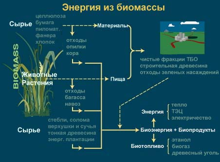
ХИМИЧЕСКИЙ СОСТАВ БИОМАССЫ
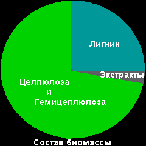 |
Химический состав биомассы может различаться в зависимости от ее вида. Обычно растения состоят из 25% лигнина и 75% углеводов или сахаридов. Углеводородная фракция состоит из множества молекул сахаридов, соединенных между собой в длинные полимерные цепи. К наиболее важным категориям углеводородов можно отнести целлюлозу. Лигниновая фракция состоит из молекул несахаридного типа. Природа использует длинные полимерные молекулы целлюлозы для образования тканей, обеспечивающих прочность растений. Лигнин представляет собой "клей", который связывает молекулы целлюлозы между собой. |
КАКИМ ОБРАЗОМ ОБРАЗУЕТСЯ БИОМАССА?
Двуокись углерода из атмосферы и вода из грунта участвуют в процессе фотосинтеза с получением углеводов (сахаридов), которые и образуют "строительные блоки" биомассы. Таким образом, солнечная энергия, используемая при фотосинтезе, сохраняется в химической форме в биомассовой структуре. Если мы сжигаем биомассу эффективным образом (извлекаем химическую энергию), то кислород из атмосферы и углерод, содержащийся в растениях, вступают в реакцию с образованием двуокиси углерода и воды. Процесс является циклическим, потому что двуокись углерода может вновь участвовать в производстве новой биомассы.

В дополнение к своему эстетическому значению земной флоры биомасса представляет собой полезный и значимый ресурс для человека. В течение тысячелетий люди добывали энергию Солнца, сохраненную в виде энергии химических связей, сжигая биомассу в качестве топлива или употребляя ее в пищу, используя энергию сахаров и крахмала. В течение нескольких последних веков человечество научилось добывать ископаемую биомассу, в частности, в виде угля. Ископаемые виды топлива представляют собой результат очень медленной химической трансформации полисахаридов в химические соединения, сходные с лигниновой фракцией. В результате химический состав угля обеспечивает более концентрированный источник энергии. Все виды ископаемого топлива, которые потребляет человечество - уголь, нефть, природный газ - представляют собой древнюю биомассу. В течение миллионов лет на Земле остатки растений превращаются в топливо. Несмотря на то, что ископаемое топливо состоит из тех же компонентов - водорода и углерода - как и "свежая" биомасса, оно не может рассматриваться в качестве возобновляемого источника, потому что его образование требует весьма длительного времени.
Другое важное различие между биомассой и ископаемыми видами топлива определяется их воздействием на окружающую среду. В процессе разложения растения химические вещества попадают в атмосферу. Напротив, ископаемое топливо "заперто" глубоко под землей и не воздействует на атмосферу до тех пор, пока не будет сожжено.
Древесина, по-видимому, является наиболее известным примером биомассы. В процессе сжигания высвобождается энергия, которую дерево усвоило, поглотив солнечные лучи. Однако, древесина - только один пример биомассы. Кроме древесины могут использоваться и другие виды биомассы - сельскохозяйственные отходы (например, жом сахарного тростника, стебли кукурузы, рисовая солома и шелуха, скорлупа орехов), древесные отходы (например, опилки, порубочные остатки, щепа), бумажные отходы, отходы зеленых насаждений в городском мусоре, энергетические растения (быстрорастущие деревья, например, тополь или ива, и такие травы, как switchgrass or elephant grass ), а также метан, собранный на полигонах твердых бытовых отходов (ТБО), станциях очистки муниципальных сточных вод. Для этой цели может использоваться и навоз животноводческих и птицеферм.
Биомасса считается одним из ключевых возобновляемых энергетических ресурсов будущего. Сегодня она обеспечивает 14% потребления первичной энергии. Для трех четвертей населения человечества, живущих в развивающихся странах, биомасса является самым важным источником энергии. Увеличение населения и потребления энергии на одного жителя, а также истощение ресурсов ископаемого топлива приведут к быстрому увеличению спроса на биомассу в развивающихся странах. В среднем, в развивающихся странах биомасса обеспечивает 38% первичной энергии (а в некоторых странах 90%). Весьма вероятно, что биомасса останется важным глобальным источником энергии в развивающихся странах в течение всего 21 века.
Использование биомассы в качестве источника энергии в мире
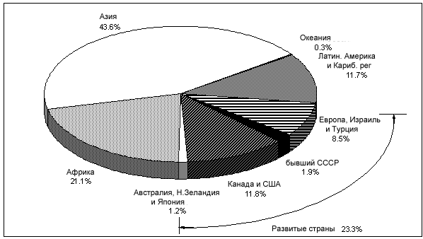
Потребление биомассы растет быстрыми темпами и в развитых странах. В некоторых развитых странах биомасса используется весьма интенсивно. Например, Швеция и Австрия обеспечивают 15% потребности в первичных энергоносителях за счет биомассы. Швеция планирует увеличить потребление биомассы в будущем, сопроводив этот рост закрытием атомных и тепловых электростанций, использующих ископаемые виды топлива.
 |
В США, где 4% энергии получают из биомассы (почти столько же, как от атомных электростанций), сегодня работают установки, сжигающие биомассу для получения электроэнергии общей установленной мощностью 9000 МВт. Биомасса может с легкостью обеспечить более 20% энергетических потребностей страны. Другими словами, имеющиеся земельные ресурсы и инфраструктура сельского хозяйства позволяют заменить все работающие атомные станции без изменения цен на продовольственные товары. Более того, использование биомассы для производства этанола могло бы уменьшить импорт нефти на 50%. |

Общая масса живой материи (включая влажность) - 2000 миллиардов тонн
Общая масса наземных растений - 1800 миллиардов тонн
Общая масса леса -1600 миллиардов тонн
Количество наземной биомассы на одного жителя - 400 тонн
Количество энергии, накопленной наземной биомассой - 25 000 ЭДж (1 ЭДж=10+18 Дж)
Годовой прирост биомассы - 400 000 миллионов тонн
Скорость накопления энергии наземной биомассой - 3000 ЭДж/год (95 TВт)
Общее потребление всех видов энергии - 400 ЭДж/год (12 TВт)
Потребление энергии биомассы - 55 ЭДж/год (1,7 TВт)

БИОМАССА В РАЗВИВАЮЩИХСЯ СТРАНАХ
Несмотря на широкое применение биомассы в развивающихся странах, обычно оно неэффективно. Общая эффективность традиционного использования биомассы составляет только 5-15%. Кроме того, биомасса менее удобна для использования, чем ископаемое топливо. В некоторых случаях ее использование может быть опасно для здоровья, например, при использовании биомассы для приготовления пищи в плохо проветриваемых помещениях. При этом могут образовываться твердые частицы, CO, NОx, формальдегиды и другие органические вещества, концентрация которых может превысить уровень, рекомендуемый ВОЗ (Всемирная Организация Здравоохранения). Более того, традиционное использование биомассы (обычно сжигание древесины) часто ассоциируется с увеличивающимся дефицитом выращиваемой древесины, истощением запасов питательных веществ, проблемами уменьшения площади лесов и расширения пустынь. В начале 80-х годов почти 1.3 миллиарда жителей Земли обеспечивали свои потребности в топливе за счет уменьшения запасов древесины.
Доля биомассы в общем потреблении энергии:
Существует огромный потенциал биомассы, который может быть задействован в случае улучшения использования существующих ресурсов и увеличения продуктивности растений. Биоэнергетика может быть модернизирована путем использования современных технологий для преобразования исходной биомассы в современные и удобные для использования виды энергоносителей (такие, как электроэнергия, жидкие и газообразные топлива и подготовленное твердое топливо). В результате значительно большее количество энергии, чем сегодня, могло бы быть извлечено из биомассы. Это могло бы принести существенную социальную и экономическую пользу как сельскому так и городскому населению. Существующее в настоящее время ограничение доступа к удобным ресурсам ограничивает качество жизни миллионов людей в мире, в частности, в сельских районах развивающихся стран. Выращивание биомассы представляет собой сельский процесс, требующий больших человеческих ресурсов. В случае его развития могут быть созданы многочисленные рабочие места в сельскохозяйственных районах и ограничена миграция сельского населения в города. В то же время, выращивание биомассы может обеспечить развивающуюся в сельских районах промышленность удобным энергоносителем.
ПИЩА ИЛИ ТОПЛИВО?
Большая часть критики использования биомассы, особенно в крупномасштабном производстве топлива, связана с опасениями, что оно отвлекает сельское хозяйство от производства пищи, особенно в развивающихся странах. Основной аргумент заключается в том, что программы выращивания энергетических растений конкурируют с выращиванием пищевых культур различными способами (сельское хозяйство, инвестиции в сельские районы, инфраструктура, вода, удобрения, обученные человеческие ресурсы и т.д.), а это может привести к нехватке продовольствия и повышению цен. Однако, это так называемое противоречие "пища против топлива" оказывается преувеличенным во многих случаях. Предмет обсуждения более сложен, чем это обычно представляется, поскольку сельскохозяйственная и экспортная политика снабжения продовольствием представляют собой факторы огромного значения. Аргументы должны анализироваться с учетом реальной ситуации в мире, отдельной стране или регионе с обеспечением и потребностью в продовольствии (увеличением излишков продуктов питания в большинстве промышленных и некоторых развивающихся странах), использованием продовольствия в качестве корма для скота, недостаточным использованием аграрного потенциала, увеличивающимся потенциалом сельскохозяйственного производства и преимуществами или недостатками производства биотоплива.
Недостаток продовольствия и увеличение цен, с которыми столкнулась Бразилия несколько лет тому назад, часто связывали с реализацией программы "ProAlcool". Однако тщательное изучение не подтверждает, что производство этанола отрицательно воздействует на рынок продовольствия, поскольку Бразилия остается одним из самых больших экспортеров сельскохозяйственной продукции, а рост производства продуктов питания обгоняет темпы роста населения. Производство зерновых в стране в 1976 году составляло 416 кг на человека, а в 1987 году - 418 кг. Из 55 млн га земельных угодий, предназначенных для выращивания пищевых культур, только 4.1 млн га (7.5%) были использованы для выращивания сахарного тростника, что составляет только 0.6% общей площади страны, пригодной для экономического использования или 0.3% территории Бразилии. При этом только 1.7 млн га были использованы для производства этанола. Таким образом, противоречие между пищевыми и энергетическими культурами не является критическим. Более того, замена выращиваемых культур на сахарный тростник привела к увеличению выращиваемой пищи, поскольку багасса (тростник после гидролизной обработки) и сухие дрожжи используются для питания животных. Недостаток продовольствия и увеличение цен в Бразилии были вызваны комбинацией политических и экономических причин - политикой увеличения экспорта, гиперинфляцией, обесцениванием денег, политикой контроля цен на продукты местного производства и т.д. В этих условиях любые возможные негативные воздействия производства этанола могут рассматриваться как часть общих проблем, но не единственной проблемой.
Важно отметить, что развивающиеся страны испытывают на себе
как продовольственную, так и энергетическую проблемы. Поэтому адаптация
сельскохозяйственной практики должна учитывать это обстоятельство и
развивать эффективные методы использования имеющейся земли и других
ресурсов для удовлетворения как пищевых, так и энергетических
потребностей с использованием агролесной системы.
НАЛИЧИЕ ЗЕМЛИ
Фундаментальным отличием биомассы от других видов топлив является потребность в земле для ее выращивания. При этом возникает вопрос, как и кем эта земля будет использоваться. Существует два базовых подхода для определения способа использования земли. В рамках "технократического" подхода рассматриваются потребности, затем идентифицируются биологические источники, территории для выращивания и возможный экологический эффект. Такой подход игнорирует многие местные и большинство удаленных эффектов, вызываемых плантациями биомассы, а также игнорирует мнение местных фермеров, которые знают местные условия. В результате многие проекты в прошлом оказались неудачными. В рамках "комплексного" подхода задается вопрос, каким образом нужно использовать землю для обеспечения устойчивого развития, и рассматривается, какое сочетание методов и выращиваемых культур приведет к оптимальному использованию конкретного участка земли для удовлетворения потребностей в пище, топливе, корме для скота, социальном развитии и т.д. Такой подход требует полного понимания сложных вопросов землепользования.
Необходимо отметить, что продуктивность биомассы может быть увеличена, потому что во многих местах сегодня она низкая и составляет менее 5 т/га в год для древесных видов в условиях неэффективного менеджмента. Повышение эффективности является ключевым моментом как для формирования конкурентоспособных цен, так и для лучшей утилизации пригодных земель. Улучшение может включать идентификацию быстрорастущих видов, успешное размножение и использование комбинаций культур, новые знания о выращивании растений и биотехнологиях, которые могут привести к увеличению производительности растений в 5 - 10 раз по сравнению с их природным ростом.
Сегодня является возможным, в случае хорошего менеджмента, проведения исследований и выращивания отобранных видов растений на пригодных землях получить от 10 до 15 т/га в год в районах с умеренным климатом и от 15 до 25 т/га в год в тропических странах. Рекордное значение 40 т/га в год (сухой вес) достигнуто при выращивании эвкалипта в Бразилии и Эфиопии. Высокий выход биомассы может быть достигнут при выращивании трав, если существуют пригодные агроэкологические условия. Например, в Бразилии средний выход сахарного тростника вырос от 47 до 65 т/га (вес урожая) в течение последних 15 лет, в то время как в таких регионах, как Гавайи, Южная Африка и Квинсленд (Австралия) обычным урожаем считается 100 т/гa. Представляется возможным достичь трехкратного увеличения производительности для различных видов выращиваемых культур, как это было сделано для зерновых в течение последних 45 лет. Однако это потребует интенсивных аналогичных усилий и развития инфраструктуры.
ЭНЕРГЕТИЧЕСКАЯ ЕМКОСТЬ
При рассмотрении энергетического потенциала к биомассе относят все формы материалов растительного происхождения, которые могут быть использованы для получения энергии: древесину, травяные и зерновые культуры, отходы лесного хозяйства и животноводства и т.д. Поскольку биомасса представляет собой твердое топливо, ее можно сравнивать с углем. Теплотворная способность сухой биомассы составляет около 14 МДж/кг. Аналогичное значение для каменного угля и лигнита составляет 30 МДж/кг и 10-20 МДж/кг (см. таблицу далее). В момент образования (сбора урожая) биомасса содержит большое количество воды, от 8 до 20% в пшеничной соломе, 30 - 60% в древесине, до 75 - 90% в навозе сельскохозяйственных животных и 95% в водном гиацинте. В противоположность этому, влажность каменного угля находится в диапазоне от 2 до 12%. Поэтому плотность энергии в биомассе на этапе возникновения ниже, чем у каменного угля. С другой стороны, биомасса имеет преимущества с точки зрения химического состава. Зольность биомассы значительно ниже, чем угля. Кроме того, в золе биомассы обычно не содержатся тяжелые металлы и другие загрязнители, поэтому она может вноситься в почву в качестве удобрения.
Обычно биомассу ошибочно причисляют к низкосортным видам топлива, поэтому во многих странах ее использование даже не отражается в статистических отчетах. Однако она обеспечивает большую гибкость снабжения энергоносителями ввиду большого количества видов топлива, которые могут быть из нее получены. Энергия биомассы может использоваться для производства тепловой и электрической энергии посредством сжигания в современных устройствах - от миниатюрных домашних котлов до многомегаваттных электростанций, использующих газовые турбины. Системы, использующие биомассу в энергетических целях, обеспечивают экономическое развитие без увеличения парникового эффекта, поскольку биомасса является нейтральной по отношению к выбросам СО2 в атмосферу в случае, если ее производство и использование осуществляется разумным образом. Биомасса обладает другими щадящими экологическими свойствами (малой эмиссией серы и оксидов азота) и может способствовать реабилитации деградированных земель. Растет понимание того, что использование биомассы в больших коммерческих системах основано на устойчивых, аккумулированных ресурсах и отходах и может улучшить управление природными ресурсами в целом.
Энергетическая емкость - сравнительная таблица
|
|
|
|
|
|
|
|
|
|
|
|
|
|
|
|
|
|
|
|
|
|
|
|
|
|
|
|
|
|
|
|
|
|
|
|
|
|
|
|
|
|
|
|
|
|
|
|
|
|
|
|
|
|
ПРЕИМУЩЕСТВА БИОМАССЫ КАК ИСТОЧНИКА ЭНЕРГИИ
Экономическое развитие сельскохозяйственных районов как в развитых, так и развивающихся странах является одним из преимуществ использования биомассы. Увеличение доходов фермеров и диверсификация рынка, уменьшение аграрного перепроизводства и дополнительные денежные поступления, увеличение конкурентоспособности на международном рынке, общее оживление экономики в сельских районах, уменьшение негативного воздействия на окружающую среду - все это является важными факторами использования биомассы в качестве источника энергии. Новые финансовые поступления фермеров и сельского населения улучшают материальное положение сельских общин и могут приводить к дальнейшей активизации локальной экономики. Наконец, это означает замедление темпов миграции в города, что очень важно для многих регионов в мире.
Увеличение рабочих мест (для производства, выращивания и утилизации биомассы) и промышленный рост (развитие предприятий для производства жидких топлив, другие виды промышленности, энергетика) могут быть огромными. Например, департамент сельского хозяйства США оценил, что 17 тысяч рабочих мест создается для производства каждого миллиона галлонов этанола. В свою очередь, исследовательский институт электрической энергии оценил, что производство 5 квадриллионов Бте (Британская тепловая единица) электроэнергии на площади 50 миллионов акров увеличит доходы фермеров на 12 миллиардов долларов США ежегодно (США потребляет ежегодно 90 квадриллионов Бте). Обеспечение фермеров стабильным доходом создает новый рынок и усиливает локальную экономику, создавая циркуляцию денежных средств в локальных сообществах.
Улучшение использования аграрных ресурсов часто предлагается в ЕС. Развитие альтернативного рынка сельскохозяйственных продуктов приводит к более эффективному использованию посевных площадей, которые недостаточно используются во многих странах ЕС. В 1991 году 128 миллионов га в ЕС использовалось для выращивания зерновых. Примерно 0.8 млн га были выведены из использования в рамках программы сокращения производства. Значительно большее количество земли планируется вывести из производства в будущем. Ясно, что переориентация части этих земель для непродуктовой утилизации (например, биомасса для производства энергии) помогла бы избежать нерационального использования аграрных ресурсов. Европейское сельское хозяйство основано на производстве ограниченного количества культур, в основном использующихся в качестве пищи для людей и животных, и многие из этих культур производятся с избытком. Падение цен привело к снижению и нестабильности доходов европейских фермеров. Выращивание энергетических культур может уменьшить перепроизводство. Такие культуры могут быть конкурентоспособны по отношению к выращиванию избыточных пищевых сортов растений.
ЭКОЛОГИЧЕСКИЕ ПРЕИМУЩЕСТВА
Использование энергии биомассы обладает многими уникальными качествами, которые обеспечивают его экологические преимущества. Оно может способствовать смягчению проблемы изменения климата, уменьшить количество кислотных дождей, эрозию почвы, загрязнение водоемов и нагрузку на полигоны ТБО, обеспечить среду для существования диких видов животных и помочь поддерживать здоровые условия существования лесов с помощью лучшего менеджмента.
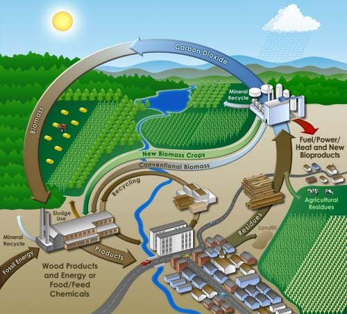
ИЗМЕНЕНИЕ КЛИМАТА
Изменение климата вызывает растущую озабоченность в мире. Человеческая деятельность, особенно сжигание ископаемых видов топлива, приводит к выбросу сотен миллионов тонн так называемых парниковых газов (ПГ) в атмосферу. ПГ включают, например, такие газы, как двуокись углерода (CO2) и метан (CH4). Озабоченность связана с тем, что ПГ в атмосфере могут изменить климат Земли, что приведет к изменению биосферы, обеспечивающей жизнь на Земле. Технологии энергетического использования биомассы могут минимизировать этот эффект. И двуокись углерода, и метан представляют собой большую угрозу, однако CH4 в 20 раз более эффективен с точки зрения парникового эффекта, чем CO2 (хотя и обладает меньшим сроком жизни в атмосфере). Сбор метана, выделяющегося на полигонах ТБО, на станциях очистки сточных вод, в хранилищах навозных стоков уменьшает выбросы метана в атмосферу и позволяет использовать его энергию для производства электроэнергии или в двигателях транспортных средств в качестве топлива. Все растения, включая и специально выращиваемые на энергетических плантациях, накапливают углерод в процессе роста, уменьшая количество углерода в атмосфере. Другими словами, двуокись углерода, выделяющаяся в процессе сжигания биомассы, поглощается в процессе последующего роста растений, реализуя так называемый замкнутый углеродный цикл. В действительности, количество связанного углерода может быть большим выделяющегося при сжигании, потому что большинство растений является многолетними. В процессе заготовки они срезаются, а не выкорчевываются. Корни при этом остаются в земле, стабилизируя почву и регенерируя в процессе последующих сезонов.
КИСЛОТНЫЕ ДОЖДИ
Кислотные дожди вызываются преимущественно попаданием в атмосферу фосфора и оксидов азота в процессе сжигания топлива. Кислотные дожди негативно воздействуют на человека и дикую природу, в частности, озера очень чувствительны к ним. Поскольку биомасса не содержит фосфора, ее сжигание не приводит к образованию кислотных дождей. Более того, биомасса может быть легко смешана с углем, что дает возможность использовать "совместное сжигание". Под совместным сжиганием здесь понимается использование биомассы вместе с углем в традиционных угольных котлах тепловых электростанций или отопительных котельных. Это очень простой способ уменьшения эмиссии фосфора и, как следствие, уменьшения количества кислотных дождей.
ЭРОЗИЯ ПОЧВЫ И ЗАГРЯЗНЕНИЕ ГРУНТОВЫХ ВОД
Растения могут уменьшать загрязнение грунтовых вод различными
способами. Энергетические плантации могут располагаться на непригодных
землях, затапливаемых территориях, а также местах, разделяющих посевные
площади. Во всех случаях энергетические культуры стабилизируют почву,
уменьшая эрозию. Они также уменьшают потери питательных веществ, что
предохраняет водные системы. Наличие растений может создавать условия
для жизни водных обитателей, например, различных видов рыб. Поскольку
обычно энергетические культуры являются многолетними и не сажаются
каждый год, машины реже посещают поля, уменьшая уплотнение почвы и
нарушение ее структуры. Другим вариантом уменьшения загрязнения воды при
использовании биомассы является сбор метана при анаэробном сбраживании в
лагунах с навозными стоками из ферм крупного рогатого скота и птицы.
Эти огромные лагуны ответственны за загрязнение многочисленных рек.
Использование анаэробного сбраживания позволяет фермерам уменьшать
неприятный запах, использовать собранный метан для производства энергии и
получать жидкие или полусухие удобрения, которые могут использоваться
на месте или продаваться.
Наиболее распространенными источниками биомассы являются растения. Они использовались в виде древесины, торфа или соломы в течение тысячелетий. Сегодня западный мир не так как раньше смотрит на этот высокоэнергетический вид топлива. Это произошло из-за распространенного мнения, что использование угля, нефти и электричества чище, более эффективно и более соответствует высокому уровню технологии. Однако это впечатление не совсем верно. Растения могут специально выращиваться для энергетических целей или могут быть изъяты из окружающей среды. На плантациях обычно используются те виды, которые производят большое количество биомассы за короткое время. Это могут быть древесные виды (как ива или эвкалипт) или другие быстрорастущие растения (например, сахарный тростник, кукуруза или соя).
ДРЕВЕСНЫЕ ОТХОДЫ
Древесина добывается на постоянной основе: в лесах в процессе вырубки. Оценить ежегодный прирост лесов на Земле достаточно сложно. По одной из приблизительных оценок он составляет 12,5x109 м3/год с содержанием энергии 182 ЭДж. Это соответствует 1,3 от общего потребления угля на планете. Среднегодовая добыча древесины в период 1985-1987г.г. составила 12,5x109 м3/год (эквивалент 40 ЭДж/год). Таким образом, часть прироста может быть дополнительно использована в энергетических целях в процессе ухода за лесами и, возможно, даже увеличения при этом их производительности.
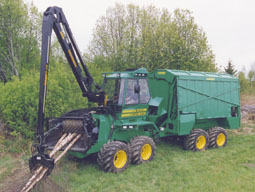
В процессе прореживания лесных плантаций создается большое количество древесных отходов. Сегодня они зачастую остаются гнить на месте. Это происходит даже в странах, в которых ощущается недостаток топлива. Древесные отходы могут быть собраны, высушены и использованы в качестве топлива частными и местными промышленными потребителями, однако большой объем и влажность делают их транспортировку экономически нецелесообразной. В развивающихся странах, широко использующих древесный уголь в качестве топлива, производство угля в печах на месте образования отходов может уменьшить расходы на транспортировку. Механические рубительные машины для производства древесной щепы (30-40 мм) были созданы в Европе и Северной Америке в течение последних 15 лет. Такая щепа может быть легко высушена и использована в специализированных котлах. Использование порубочных остатков для отопления и/или производства электроэнергии представляет собой растущий бизнес во многих странах. Американские энергоснабжающие компании имеют более 9000 МВт мощностей, работающих с использованием биомассы (эквивалент 9 атомных блоков). Большинство установок построено за последние 10 лет. В Австрии общая мощность домашних котлов и котлов централизованного теплоснабжения (ЦТ), сжигающих древесные отходы, кору и щепу, достигает 1250 МВт. Мощность большинства котлов ЦТ находится в диапазоне 1-2 МВт. Имеется несколько установок большей мощности (15 МВт) и большое количество малых когенерационных установок.Следующим источником древесных отходов является обработка деловой древесины. Сухие опилки и другие отходы, возникающие в процессе распиловки, представляют собой качественное топливо. По существующим оценкам, британская мебельная промышленность поставляет 35000 тонн таких отходов в год (третья часть от общего количества), обеспечивая 0,5 ПДж энергии для отопления и горячего водоснабжения, а также для получения пара. В Швеции, где биомасса уже сегодня обеспечивает около 15% первичной энергии, отходы лесной и деревообрабатывающей промышленности дают 200 ПДж в год, в основном в качестве топлива для ТЭЦ.
ОТХОДЫ СЕЛЬСКОГО ХОЗЯЙСТВА
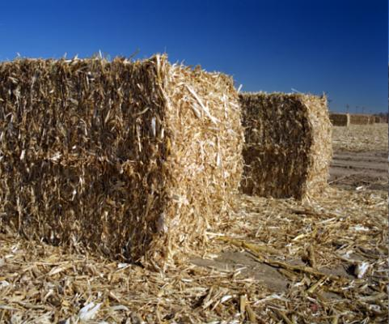
Сельскохозяйственные отходы представляют собой огромный источник биомассы. Отходы растениеводства и животноводства обеспечивают значительное количество энергии, уступающее только древесине, которая является главным видом топлива из биомассы на Земле. Сельскохозяйственные отходы включают: отходы растительных культур, например, солому, некондиционную продукцию и излишки производства, а также отходы животноводства в виде навоза. В Индии в 1985 году в качестве топлива было использовано 110 млн тонн навоза и растительных остатков, что близко к объему использования древесины - 133 млн тонн. В Китае количество сельскохозяйственных отходов в 2,2 раза превышает количество древесного топлива.Каждый год в мире образуются миллионы тонн соломы. Более половины этого количества не используется. Во многих странах она сжигается на полях или запахивается в землю. В некоторых развитых странах экологическое законодательство запрещает сжигание соломы на полях. Это привлекло внимание к соломе как к потенциальному источнику энергии.
Энергетическое использование растительных остатков вызывает вопрос о том, какое количество может быть использовано без негативного воздействия на урожай. В соответствии с опытом развитых стран, около 35% растительных остатков может быть удалено без воздействия на будущий урожай.
Промышленные отходы, содержащие биомассу, также могут быть использованы для производства энергии. Например, из отходов производства спирта можно получить горючий газ. Другие полезные виды отходов включают отходы пищевой и текстильной промышленности.
БЫСТРОРАСТУЩИЕ РАСТЕНИЯ
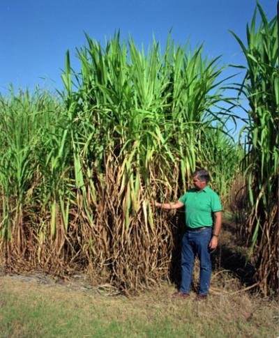
Биомасса может специально выращиваться на энергетических плантациях в виде деревьев или других видов растений, например, травы (сорго, сахарный тростник). Все эти виды растений могут быть использованы в качестве топлива. Основным преимуществом при этом является короткий период выращивания - обычно от трех до восьми лет. Для некоторых видов трав урожай может собираться каждые 6-12 месяцев. В мире существует около 100 миллионов гектаров земли, используемой для плантаций древесных культур.
Важными параметрами при выборе видов растений для выращивания на энергетических плантациях являются: наличие вида на местном рынке, простота разведения, устойчивость развития в неблагоприятных условиях и продуктивность, выраженная в производстве сухой биомассы на гектар в год (т/га/год). Продуктивность представляет собой параметр, определяющий способность растения использовать местные ресурсы. Это наиболее важный фактор при решении вопроса о производстве биомассы с целью оптимизировать ее производство на определенной территории в определенный период времени с наименьшими затратами. По этой причине высокопроизводительные виды биомассы предпочтительны для производства энергии.
Некоторые виды растений демонстрируют высокую продуктивность по сравнению с другими при выращивании в одинаковых условиях. Несмотря на то, что продуктивность различных древесных пород зависит от типа почвы и климата, некоторые породы деревьев явно выделяются на общем фоне. Например, некоторые сорта эвкалипта имеют продуктивность 65 т/га/год сухой биомассы, виды Salix and Populus показывают соответственно 30 и 43 т/га/год.

ИСПОЛЬЗОВАНИЕ ТОПЛИВА ИЗ БИОМАССЫ В РАЗВИВАЮЩИХСЯ СТРАНАХ
ДРЕВЕСИНА
Под древесным топливом понимают все виды топлива, полученные в лесном хозяйстве. Древесное топливо составляет 10% топлива, используемого в мире. В Азии и Латинской Америке его доля составляет 20%, в Африке - 50%. При этом древесина является главным источником энергии, особенно в бытовых целях, во многих бедных развивающихся странах. В 22 странах древесное топливо обеспечивает от 25 до 49% потребления энергии, в 17 странах - 50-74% и в 26 странах - 75-100%.
Более половины древесины, получаемой в мире, используется в качестве топлива. В некоторых странах, например, в Танзании, эта доля может быть значительно большей (97%). Несмотря на то, что древесное топливо является главным источником энергии в сельских районах и для людей с низким уровнем доходов в развивающемся мире, его количество быстро уменьшается, приводя к дефициту и экологической деградации. По существующим оценкам, треть населения Земли испытывает ежедневные трудности по обеспечению топливом для бытовых нужд.
Несколько проведенных исследований снабжения древесным топливом в развивающихся странах подтвердили, что его нехватка является реальностью сегодня и сохранится в будущем, даже при дополнительных усилиях по управлению ресурсами. Поэтому увеличение производства древесины путем внедрения эффективных технологий является необходимым условием устойчивого развития в развивающихся странах.
ДРЕВЕСНЫЙ УГОЛЬ
Увеличение использования древесного угля в
Европе связано с промышленной революцией в Англии в 17 - 18 веках. В
Швеции потребление древесного угля выросло в течение 19 столетия в связи
с производством металла, в частности, высококачественной стали. Сегодня
древесный уголь остается важным видом бытового и, в меньшей степени,
промышленного топлива во многих развивающихся странах. Он
преимущественно используется в городах, где простота хранения, высокая
теплотворная способность (30 МДж/кг по сравнению с 15 МДж/кг для
древесины), меньшее количество дымовых выбросов и устойчивость к
насекомым делают его более привлекательным, чем древесное топливо. В
крупных городах Танзании доля древесного угля составляет 90% общего
энергопотребления.
ОТХОДЫ
Потенциал образования лесных и сельскохозяйственных отходов огромен - около 2 миллиардов т/год во всем мире. Сегодня этот потенциал недостаточно используется во многих регионах мира. В районах с недостатком леса, таких как Бангладеш, Китай, северных равнинах Индии и Пакистане до 90% бытовых потребностей в энергии покрывается в сельской местности за счет сельскохозяйственных отходов. По существующим оценкам около 800 миллионов обитателей Земли используют с/х отходы и навоз для приготовления пищи, хотя точные подсчеты сделать трудно. В противоположность распространенному мнению, использование навоза в качестве источника энергии не ограничено только развивающимися странами. Например, в Калифорнии коммерческие биогазовые установки генерируют около 17.5 МВт электроэнергии, используя навоз крупного рогатого скота. Большое количество биогазовых установок имеется в Европе.
Количество энергии, которое теоретически возможно получить из возобновляемых отходов, составляет 54 ЭДж в развивающихся странах и 42 ЭДж в развитых регионах. Возобновляемые отходы включают три основных компонента: лес, продукты растениеводства и навоз. В расчетах предполагается, что только 25% отходов используется полезно. Развивающиеся страны теоретически могут покрыть 15% потребностей в энергии за счет отходов, промышленные страны - 4%.
Отходы сахарного тростника (жом, листья) представляют собой важный и зачастую огромный потенциал для производства электроэнергии, который пока используется недостаточно эффективно.
В зависимости от типа газовой турбины и доли использования стеблей и листьев тростника в межсезонье, количество электроэнергии, вырабатываемой из сахарного тростника, по некоторым оценкам может в 44 раза превышать собственное ее потребление сахарным или спиртовым заводом. На каждый литр спирта газовая турбина может произвести более 11 кВт·ч электроэнергии сверх собственного потребления завода (около 820 кВт·ч/т). По другим оценкам, использование жома для конденсационных турбин дает дополнительно 20-65 кВт·ч электроэнергии на тонну тростника. Этот количество может быть удвоено с помощью использования вида barbojo в межсезонье. Себестоимость произведенной электроэнергии оценивается в 0,05 $/кВт·ч. Доходы от продажи электроэнергии, произведенной параллельно с получением сахара, сравнимы с доходами от продажи сахара, а в случае одновременного производства спирта и электроэнергии доходы от продажи электроэнергии превышают доходы от реализации спирта. В последнем случае электроэнергия может считаться основным продуктом, а спирт побочным.
Только в Индии производство электроэнергии из отходов сахарного тростника в 2030 году может достичь 550 ТВт·ч/год (общее производство электроэнергии из всех источников в стране в 1987 году было менее 220 ТВт·ч). В глобальном масштабе около 50 ГВт установленной мощности может быть обеспечено с помощью отходов. Теоретический потенциал отходов в 80 развивающихся странах, производящих сахар из сахарного тростника, достигает 2800 ТВт·ч/год, что на 70% превышает общее производство электроэнергии в этих странах в 1987 году. Изучение общего потенциала сахарной промышленности дает цифру 500 ТВт·ч/год. Предполагая, что третья часть отходов может быть использована для производства электроэнергии с помощью внедрения новых технологий, 10% современной мировой потребности в электроэнергии (10000 ТВт·ч/год) может быть обеспечена из этого источника.
МЕТОДЫ ПОЛУЧЕНИЯ ЭНЕРГИИ ИЗ БИОМАССЫ
Практически все виды "сырой" биомассы достаточно быстро разлагаются, поэтому немногие пригодны для долговременного хранения. Из-за относительно низкой энергетической плотности транспортировка биомассы на большие расстояния нецелесообразна. Поэтому в последние годы значительные усилия были предприняты для поисков оптимальных методов ее использования.
Методы получения энергии из биомассы основаны на следующих процессах:
Прямое сжигание биомассы.
Термохимическое преобразование для получения обогащенного топлива.
Процессы этой категории включают пиролиз, газификацию и сжижение.
Биологическое преобразование. Такие естественные процессы, как
анаэробное сбраживание и ферментация приводят к образованию полезного
газообразного или жидкого топлива.
В некоторых из перечисленных процессов побочным продуктом является тепло. Оно обычно используется на месте образования или на небольшом удалении для теплоснабжения, в химических процессах или для производства пара и последующего получения электроэнергии. Основным продуктом процессов является твердое, жидкое или газообразное топливо: древесный уголь, заменители или добавки к бензину, газ для продажи или производства электроэнергии с использованием паровых или газовых турбин.
СЖИГАНИЕ
Технология прямого сжигания представляет собой наиболее очевидный способ извлечения энергии из биомассы. Она проста, хорошо изучена и коммерчески доступна. Существует множество типов и размеров систем прямого сжигания, в которых можно сжигать различные виды топлива: птичий помет, соломенные тюки, дрова, муниципальные отходы и автомобильные шины. Тепло, получаемое при сжигании биомассы, может использоваться для отопления и горячего водоснабжения, для производства электроэнергии и в промышленных процессах. Одной из проблем, связанных с непосредственным сжиганием, является его низкая эффективность. В случае использования открытого пламени большая часть тепла теряется.
Сжигание древесины может быть разбито на 4 фазы:
Кипение воды, содержащейся в древесине. Даже древесина, высушенная в
течение нескольких лет, содержит от 15 до 20% воды в клеточной
структуре.
Выделение газовой (летучей) составляющей. Очень важно, чтобы эти газы сгорали, а не "вылетали в трубу".
Выделяющиеся газы смешиваются с атмосферным воздухом и сгорают под воздействием высокой температуры.
Сгорание
остатков древесины (преимущественно углерод). При хорошем сжигании
энергия используется полностью. Единственным остатком является небольшое
количество золы.
Для эффективного сжигания необходимы три условия:
Достаточно высокая температура.
Достаточное количество воздуха.
Достаточное время для полного сгорания.
Если количество поступающего воздуха недостаточно, сгорание происходит не полностью. При этом образуется черный дым, состоящий из несгоревшего углерода. В результате образуются отложения сажи в дымоходе, повышающие опасность возгорания. Если количество поступающего воздуха слишком велико, то температура в зоне горения снижается и газы покидают ее несгоревшими, унося тепло. Правильное количество воздуха приводит к оптимальному использованию топлива. При этом не образуются запах и дым, невелика опасность возгорания в дымоходе. Регулирование количества воздуха зависит от конструкции дымохода и тяги, которую он может обеспечить.
Прямое сжигание является простейшим и наиболее распространенным методом получения энергии, содержащейся в биомассе. Кипячение воды в кастрюле над горящими дровами представляет собой простейший процесс. К сожалению, он также является и малоэффективным, как показывают простейшие вычисления.
Один кубический метр сухой древесины содержит 10 ГДж энергии (десять миллионов кДж). Для нагревания 1 литра воды на 1 градус требуется 4,2 кДж тепловой энергии. Для того, чтобы довести до кипения литр воды, потребуется менее 400 кДж, содержащиеся в 40 кубических сантиметрах древесины - то есть небольшая деревянная палочка. На практике на открытом огне потребуется, по крайней мере, в 50 раз большее количество древесины. Эффективность преобразования не превышает 2%.
Разработка печей или котлов, способных эффективно использовать энергию топлива, требует понимания процессов сгорания твердого топлива. Первым процессом, потребляющим энергию, является испарение содержащейся в древесине воды. Для относительно сухого топлива на испарение используется лишь несколько процентов от общего количества выделяемой энергии. В самом процессе сгорания всегда имеются две стадии, потому что любое твердое топливо содержит две сгораемые составляющие. Летучие компоненты выделяются из топлива при повышении температуры в виде смеси паров и испаренных смол и масел. При сжигании этих продуктов образуются небольшие пиролизные струи.
Современные устройства для сжигания (котлы) обычно производят тепло, пар, используемый в промышленных процессах, или электроэнергию. Устройство систем прямого сжигания варьируется в зависимости от варианта использования. Выбор топлива также влияет на дизайн и эффективность систем сжигания. Системы прямого сжигания биомассы подобны аналогичным устройствам, сжигающим уголь. На практике биомасса может сжигаться совместно с углем в небольшой пропорции в существующих угольных котлах. Биомасса, сжигаемая совместно с углем, представляет собой дешевое сырье, например отходы лесного или сельского хозяйства. Это помогает уменьшить выбросы в атмосферу, обычно связанные с использованием угля. Уголь представляет собой окаменевшую в течение миллионов лет биомассу. В процессе нагрева и сжатия в глубинах земной коры уголь накапливает такие химические элементы, как фосфор и ртуть. В процессе сжигания угля для производства тепловой или электрической энергии эти элементы высвобождаются и попадают в атмосферу. В "сырой" биомассе эти элементы отсутствуют.
ПИРОЛИЗ
Пиролиз представляет собой простейший и, по-видимому, самый старый способ преобразования одного вида топлива в другой с лучшими показателями. Разные виды высокоэнергетического топлива могут быть получены с помощью нагрева сухой древесины и даже соломы. Процесс использовался в течение столетий для получения древесного угля. Традиционный пиролиз заключается в нагреве исходного материала (который часто превращается в порошок или измельчается перед помещением в реактор) в условиях почти полного отсутствия воздуха, обычно до температуры 300 - 500 °C до полного удаления летучей фракции. Остаток, известный под названием древесный уголь, имеет двойную энергетическую плотность по сравнению с исходным материалом и сгорает при значительно более высоких температурах. В зависимости от влажности и эффективности процесса, 4-10 тонн древесины требуется для производства 1 тонны древесного угля. В случае если летучие вещества не собираются, древесный уголь содержит две трети энергии исходного сырья.
Пиролиз может проводиться в присутствии малого количества кислорода (газификация), воды (паровая газификация) и водорода (гидрогенизация). Одним из наиболее полезных продуктов в этом случае является метан, представляющий собой топливо для производства электроэнергии с помощью высокоэффективных газовых турбин.
Более сложная техника пиролиза позволяет собрать летучие вещества. Кроме того, контроль температуры позволяет контролировать их состав. Жидкие продукты могут использоваться в качестве жидкого топлива. Однако они содержат кислоты и должны очищаться перед использованием. Быстрый пиролиз растительных материалов, например древесины или скорлупы орехов, при температурах 800-900 градусов Цельсия приводит к образованию 10% твердого древесного угля и преобразует 60% исходного сырья в газ, содержащий большое количество водорода и монооксида углерода. Этот метод может составить конкуренцию традиционному пиролизу, однако для широкого коммерческого использования его необходимо отработать.
В настоящее время традиционный
пиролиз считается наиболее привлекательным видом технологии.
Использование относительно низких температур означает, что в атмосферу
попадает малое количество загрязнителей, если сравнивать со сжиганием.
Это обстоятельство дает экологическое преимущество пиролизу при
переработке некоторых видов отходов. Предпринимаются попытки
использования малых пиролизных установок для переработки отходов
производства пластика, а также использованных автомобильных шин.
Хранение или захоронение этих материалов вызывает растущую озабоченность
в мире.
ГАЗИФИКАЦИЯ
Базовые принципы газификации изучаются и развиваются с начала девятнадцатого века. Во время Второй мировой войны около миллиона автомобилей приводились в движение с помощью газификаторов на биомассе. Интерес к газификации вновь возрос во время энергетического кризиса 70-х годов, а затем упал вместе с снижением цен на нефть в 80-х годах. По оценкам Мирового Банка (1989) всего лишь 1000-3000 газификаторов установлено в мире, преимущественно в Южной Америке для производства древесного угля.
В процессе газификации древесины образуется горючий газ, представляющий собой смесь водорода, угарного газа (монооксида углерода), метана и некоторых негорючих сопутствующих компонентов. Это достигается частичным сжиганием и частичным нагревом биомассы (с использованием тепла ограниченного горения) в присутствии древесного угля (естественного продукта сжигания биомассы). Газ может использоваться вместо бензина. При этом мощность автомобильного двигателя снижается на 40%. Возможно, что в будущем этот вид топлива станет основным источником энергии для электростанций.
СИНТЕТИЧЕСКИЕ ТОПЛИВА
В газификаторах, использующих кислород вместо воздуха, можно получать газ, состоящий преимущественно из H2, CO и CO2. Представляет интерес то обстоятельство, что после удаления СО2 можно получить так называемый синтез-газ, из которого в свою очередь можно синтезировать практически любое углеводородное сырье. В частности, при взаимодействии Н2 и СО получается чистый метан. Другим возможным продуктом является метанол - жидкий углеводород с теплотворной способностью 23 ГДж/т. Производство метанола требует организации сложного химического процесса с высокими температурами и давлением и дорогого оборудования. Несмотря на это, интерес к производству метанола объясняется тем, что он представляет собой ценный продукт - жидкое топливо, способное непосредственно заменить бензин. В настоящее время производство метанола с использованием синтез-газа не является коммерческим. Однако технология существует для использования угля в качестве сырья. Она была развита странами, имеющими большой угольный потенциал, в периоды перебоев с поставками нефти.
ФЕРМЕНТАЦИЯ
Ферментация сахарного раствора является процессом, при котором производится этанол (этиловый спирт). Этанол является высокоэнергетическим жидким топливом, которое может использоваться вместо бензина в автомобилях. Этот вид топлива успешно используется в Бразилии. Пригодным сырьем для производства этанола является сахарная свекла или фрукты. Сахароза может быть получена из овощного крахмала и целлюлозы в процессе пульпирования и варки, а также из целлюлозы после измельчения и обработки горячими кислотами. После ферментации в течение 30 часов раствор содержит 6-10% спирта, который может быть выделен в процессе дистилляции.
Ферментация представляет собой анаэробный биологический процесс, в котором сахар превращается в спирт под воздействием микроорганизмов ( обычно дрожжей). Обычным продуктом является этанол (C2H5OH), а не метанол (CH3OH). Он может использоваться в двигателях внутреннего сгорания: либо непосредственно в специально модифицированных двигателях, либо в качестве добавки к бензину. При этом получается так называемый газохол - бензин, содержащий до 20% этанола.
Ценность конкретного вида биомассы в качестве сырья для ферментации зависит от его способности образовывать сахар. Наилучший из известных источников этанола - сахарный тростник или меласса, остающаяся после выделения тростникового сока. Другие культуры, содержащие углеводороды в виде крахмала (картофель, кукуруза и другие зерновые) требуют дополнительной обработки для получения сахара из крахмала. Этот процесс реализуется при производстве некоторых алкогольных напитков с помощью ферментов, содержащихся в солоде. Даже древесина может быть сырьем. Однако содержащиеся в ней углеводороды (целлюлоза) с трудом разлагаются до сахаров под воздействием кислоты и ферментов, вызывая сложности при практической реализации процесса.
Жидкость, получающаяся в процессе ферментации, содержит около 10% этанола, который нужно выделить с помощью дистилляции для дальнейшего использования. Энергетическое содержание конечного продукта около 30 ГДж/т или 24 ГДж/м3. Процесс требует большого количества тепла, которое обычно получается из растительных отходов (например, жома сахарного тростника или стеблей и початков кукурузы). Потери энергии в процессе ферментации значительны, однако этот недостаток компенсируется удобством использования и транспортировки жидкого топлива, относительно низкой ценой и доступностью технологии.
АНАЭРОБНОЕ СБРАЖИВАНИЕ
Природа обладает средством разрушения и удаления отходов, а также мертвых растений и животных. Работу по разрушению производят бактерии. Навоз и компост, использующиеся в качестве удобрения, также получаются в процессе декомпозиции органических материалов. Если части отмирающих растений и животных попадают в воду, то в последствии на поверхности воды можно заметить пузырьки, поднимающиеся со дна. Газ, содержащийся в пузырьках, способен возгораться. Этот загадочный феномен известен человеку многие века. Секрет был раскрыт учеными около 200 лет тому назад. Процесс представляет собой разложение органики в отсутствии воздуха (кислорода). Газ, образование которого обычно отмечалось на болотах, был назван и до сих пор называется болотным газом. Этот газ, называемый также биогазом, представляет собой смесь метана (CH4) и двуокиси углерода (CO2). Впервые биогаз был исследован и описан Александро Вольта (Alessandro Volta) в 1776 году. Хемфри Деви (Humphery Davy) впервые в начале 1800 года показал, что горючий газ метан содержится в навозе. В дальнейшем были развиты биогазовые технологии, позволяющие получить биогаз из любых биодеградирующих материалов в искусственно созданных условиях.
Анаэробное сбраживание, как и пиролиз, реализуется при отсутствии воздуха. Однако в этом случае декомпозиция происходит под воздействием бактерий, а не высоких температур. Это процесс, происходящий практически во всех биологических материалах и ускоряющийся в теплых и влажных условиях (естественно, при отсутствии воздуха). Часто он имеет место при разложении растений на дне водоемов.
Анаэробное сбраживание также происходит в условиях, создаваемых в процессе человеческой деятельности. Например, биогаз образуется в местах концентрации сточных вод, навозных стоков ферм, а также твердых бытовых отходов на свалках и полигонах. В обоих случаях биогаз представляет собой смесь, преимущественно состоящую из метана и двуокиси углерода. Основные отличия заключаются в природе исходного материала, масштабах и темпе образования биогаза, приводящие к весьма отличающимся технологиям для этих источников.
Химия процесса образования биогаза достаточно сложна. Сложная популяция бактерий разлагает органические материалы в сахара, а затем в различные кислоты, из которых в свою очередь получается биогаз. При этом остается инертный остаток, состав которого зависит от типа установки и исходного сырья.
БИОГАЗ
Биогаз представляет собой ценное топливо. Для
его производства во многих странах строятся специальные метантенки,
которые наполняются навозными стоками или сточными водами. Метантенки
варьируются в размерах от одного кубического метра (в индивидуальных
хозяйствах) до тысяч кубометров, используемых в больших коммерческих
установках. Загрузка может быть постоянной или порционной, а процесс
сбраживания может занимать от десяти дней до нескольких недель. В
процессе деятельности бактерий образуется тепло, однако в условиях
холодного климата необходим подвод дополнительного тепла для поддержания
оптимальной температуры (по крайней мере, 35 оC). Источником
тепла может быть биогаз. В предельном случае весь газ может быть
использован для нагрева. Хотя в этом случае выход энергии в процессе
будет нулевым, все равно его существование будет оправдано экономией
ископаемого топлива, необходимого для переработки отходов. Хорошие
биогазовые установки могут производить 200-400 м3 биогаза с содержанием метана от 50 до 75% из каждой тонны сухого органического вещества.
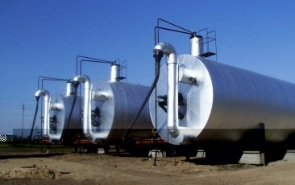 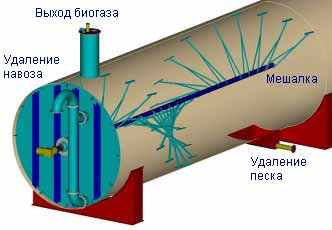
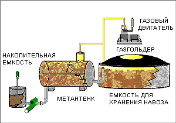 |
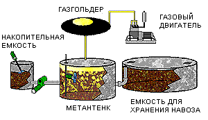 |
|
|
|
БИОГАЗ ПОЛИГОНОВ ТБО (СВАЛОЧНЫЙ ГАЗ)
Большая часть муниципальных отходов - твердых бытовых отходов (ТБО) - представляет собой биологические материалы, а их вывоз на полигоны создает пригодные условия для анаэробного сбраживания. То, что полигоны и свалки ТБО генерируют метан, известно в течение десятилетий. Потенциальная опасность метана заставляла в некоторых случаях строить системы для принудительного сжигания метана. Только в 70-х годах 20 века серьезное внимание уделено идее использования этого "нежелательного" продукта.
ТБО имеют более сложный состав, чем сырье в биогазовых установках. Сбраживание происходит медленнее, обычно в течение нескольких лет, а не недель. Конечный продукт, известный под названием "свалочный газ", также представляет собой смесь преимущественно CH4 и CO2. Теоретически выход газа в течение "жизни" полигона может составить 150-300 м3 на тонну ТБО при концентрации метана от 50 до 60 объемных процентов. Это соответствует 5-6 ГДж энергии на тонну ТБО. На практике выход биогаза меньше.
В процессе формирования полигона каждый участок после заполнения покрывается слоем непроницаемой глины или подобного материала, создавая условия для анаэробного сбраживания. Газ собирается системой связанных между собой перфорированных труб, установленных в теле полигона вплоть до глубины 20 метров. На новых полигонах система труб устанавливается до поступления ТБО. На больших полигонах может быть установлено несколько километров труб, с помощью которых можно собрать 1000 м3/час свалочного газа и более.
Все больше свалочный газ используется для
производства электроэнергии. В настоящее время большинство установок
использует двигатели внутреннего сгорания, например, стандартные судовые
двигатели. При типичном выходе газа, равном 10ГДж/час, могут быть
установлены двигатель и генератор мощностью 500 кВт.
ПРОИЗВОДСТВО ТЕПЛОТЫ В ДРЕВЕСНОСЖИГАЮЩИХ КОТЛАХ
Наиболее часто при сжигании биомассы используется древесина. В развитых странах замена угольных или мазутных котлов централизованного теплоснабжения на древесносжигающие котлы снижает затраты потребителей тепла на 20-60%, поскольку стоимость древесины ниже стоимости угля и мазута. В то же время, древесные котлы более экологичны. В процессе работы они выбрасывают в атмосферу то же количество углекислого газа, которое было поглощено деревьями в процессе роста. Таким образом, сжигание древесины не вносит вклад в глобальное потепление. Поскольку древесина содержит меньше серы, чем мазут, меньше сульфатов попадает в атмосферу. Это означает уменьшение количества кислотных дождей.
МАЛЫЕ КОТЛЫ
Малые древесные котлы часто используются для отопления домов. В Дании работает около 70 тысяч котлов, в которых сжигаются дрова, древесная щепа и гранулы. Такие котлы обеспечивают тепло для радиаторов так же, как это делают мазутные котлы. Они отличаются от печей, которые обеспечивают теплом только ближайшее помещение. Древесный котел может обеспечивать теплом и горячей водой все здание. Для индивидуального (односемейного) дома установка ручного древесносжигающего котла является наилучшим решением. На более крупных объектах (фермы) экономия за счет использования древесины настолько значительна, что здесь имеет смысл устанавливать автоматические котлы, сжигающие гранулы.
Многие древесные котлы малого размера загружаются дровами вручную. Обычно они снабжены бункером для хранения топлива. Ручные котлы для сжигания дров и автоматические котлы для щепы и древесных гранул различаются между собой. Ручные котлы снабжены баком-аккумулятором для накопления энергии, полученной при сжигании топлива. Автоматические котлы оборудованы емкостью для подачи щепы или гранул. Шнековый конвейер подает топливо в соответствии с необходимой тепловой нагрузкой здания.
За последние 10 лет большой прогресс достигнут в усовершенствовании обоих видов котлов с целью повышения эффективности и снижения эмиссии (пыль и монооксид углерода). Улучшения коснулись конструкции топочной камеры, воздухоподачи и автоматизации контроля процесса сгорания. Для ручных котлов эффективность увеличилась от 50% до 75-90%. Эффективность автоматических котлов выросла с 60% до 85-92%.
КОТЛЫ С РУЧНЫМ УПРАВЛЕНИЕМ
Существует правило, что ручные котлы, работающие на дровах, имеют приемлемые параметры сжигания только на полной нагрузке. Однако в отдельных установках, имеющих контроль содержания кислорода, нагрузка может быть уменьшена до 50% без изменения эффективности или эмиссии. В таких котлах проводится отбор проб и анализ содержания кислорода в дымовых газах и автоматическое регулирование подачи воздуха.
Аналогичные системы используются в автомобилях. Для того, чтобы не приходилось загружать котлы каждые 2-5 часов в холодные периоды года, номинальная мощность котлов выбирается в 2-3 раза больше номинальной тепловой потребности здания. Это означает, что для котлов с ручной подачей топлива требуется больший размер. Котлы, использующие дрова, должны иметь емкость для хранения топлива. Это обеспечивает комфорт для пользователя, меньшие финансовые затраты и экологическое воздействие. Кроме того, в котлах без такой емкости часто наблюдаются усиленная коррозия, вызванная колебаниями температуры воды и дымовых газов.
АВТОМАТИЧЕСКИЕ КОТЛЫ
Несмотря на относительно простую конструкцию автоматических котлов, во многих из них достигается эффективность 80-90% и уровень эмиссии СО около 100 ppm (100 ppm = 0,01 об. %). В некоторых котлах достигнуты параметры 92% и 20 ppm. Важным условием для достижения таких хороших результатов является использование котла с полной нагрузкой. Для автоматических котлов важно, чтобы номинальный нагрузка котла не превышала потребности в тепле в зимний период. В переходный период (3-5 месяцев) весны и осени тепловая нагрузка обычно снижается до 20-40% от номинальной. Это приводит к ухудшению эксплуатационных характеристик. В течение летнего периода потребность в тепловой энергии снижается до 1-3 кВт на горячее водоснабжение. Это не превышает 5-10% от номинальной нагрузки котла. В случае эксплуатации котла его КПД снижается на 20-30%, а вредное воздействие на окружающую среду увеличивается. Альтернативой летней эксплуатации котла может быть установка комбинированной системы с баком-аккумулятором и солнечным коллектором.
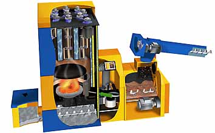
КОТЛЫ С РУЧНЫМ УПРАВЛЕНИЕМ
Принцип BURN-THROUGH (подача воздуха сквозь топливо)
| Практически все старые печи используют этот принцип. Воздух поступает в них снизу и проходит вверх, преодолевая массив топлива. В таких печах топливо сгорает очень быстро. Газы не сгорают полностью, потому что температура внутри низкая. Большая часть газов вместе с энергией, содержащейся в них, попадает в дымоход. Дымовые газы не успевают передать тепловую энергию в сравнительно коротком дымоходе. В целом эффективность таких печей обычно не превышает 50%. |
КОТЛЫ С НИЖНЕЙ ПОДАЧЕЙ ВОЗДУХА
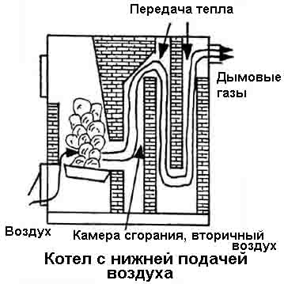 |
Такие котлы весьма отличаются от описанных выше печей. Поступающий в них воздух проходит не через весь массив топлива, а только через часть. При этом горит только нижний слой древесины. Остальные слои высушиваются и медленно газифицируются. Добавление воздуха (так называемый вторичный воздух) непосредственно в пламя позволяет сжигать летучие компоненты более эффективно. В топочных камерах современных котлов с нижней подачей воздуха имеется керамическая футировка, сохраняющая тепло внутри камеры. Это позволяет повысить температуру и эффективность сжигания. Типичная эффективность таких котлов находится на уровне 65-75%. |
КОТЛЫ СО ВСТРЕЧНОЙ ПОДАЧЕЙ
 |
В таких котлах воздух также подается только к части топлива. Газы также образуются медленно и сгорают более эффективно. Вторичный воздух также подается в футированную камеру сгорания, в которой поддерживается высокая температура. Дымовые газы должны преодолеть большое расстояние внутри котла, отдавая при этом тепловую энергию. Эффективность таких котлов находится обычно на уровне 75-85%. Некоторые из них снабжены вентиляторами для подачи воздуха вместо использования естественной тяги. Сжигание в таких котлах происходит лучше, с меньшим образованием сажи. Однако их эффективность отличается незначительно. |
ЭФФЕКТИВНОСТЬ (КПД) КОТЛОВ
Качество котла зависит от отношения между энергией, содержащейся в топливе, и энергией, переданной в систему теплоснабжения. Это отношение называется эффективность или коэффициент полезного действия (КПД). Чем выше эффективность котла, тем большая часть энергии топлива будет передана теплоносителю (воде) в котле. Хорошие котлы имеют эффективность 80-90%.
Потребление древесины в котлах со встречной подачей обычно находится в диапазоне от 4 кг/час для котла мощностью 18 кВт до 18 кг/час для котла мощностью 80 кВт. Для условий Центральной Европы средний односемейный дом (150 м2) потребляет 12 м3 древесины за отопительный сезон. Типичный котел может сжигать куски дерева длиной до 80 см. В таблице внизу приведены дополнительные данные о котлах промежуточного размера.
|
| ||
БАК-АККУМУЛЯТОР
Установка бака-аккумулятора совместно с древесносжигающими котлами имеет смысл всегда. Дополнительные расходы, связанные с приобретением и установкой бака, окупаются достаточно быстро. Качество сжигания улучшается. Вскоре после зажигания топлива процесс горения стабилизируется, и котел начинает производить тепло. Без бака вода очень скоро станет слишком горячей, и регулирующая заслонка должна будет уменьшить поступление воздуха для того, чтобы предотвратить закипание воды. Уменьшение количества воздуха приводит к повышенному образованию дыма и неполному сгоранию.
При наличии бака процесс горения может продолжаться, при этом тепло накапливается в баке. Вода в котле не перегревается. Заслонка открыта, а процесс горения происходит с максимальной эффективностью. Теплая вода поступает в радиаторы непосредственно из бака-аккумулятора. Размеры бака зависят от количества тепла, необходимого для здания, и эффективности котла.
СОВМЕСТНОЕ ИСПОЛЬЗОВАНИЕ ДРЕВЕСИНЫ И СОЛНЕЧНОЙ ЭНЕРГИИ ДЛЯ ОТОПЛЕНИЯ
Если Вы решили установить у себя древесносжигающий котел, рекомендуем Вам также подумать об использовании солнечной энергии. Древесный котел и солнечные панели зачастую могут использовать общий бак-аккумулятор. При этом снижается общая стоимость системы. Использование комбинированной системы позволяет отказаться от сжигания древесины в летнее время для получения горячей воды. Кроме того, "сжигать" солнечную энергию обходится дешевле, чем энергию древесины!
ВЫБОР ТОПЛИВА
 Какой бы вид топлива Вы не использовали, оно должно быть сухим.
Содержание воды в свежеспиленном дереве достигает 50%, поэтому сжигать
его сразу неэкономично. Часть энергии при сжигании будет затрачено на
испарение воды, соответственно количество полезной энергии окажется
меньшим. Поэтому перед сжиганием древесина должна высушиваться. Лучшее,
что можно сделать - подождать по крайней мере год, а лучше два.
Простейшим способом является хранение древесины на открытом воздухе под
навесом или в сарае, предохраняющем от прямого попадания дождя.
Какой бы вид топлива Вы не использовали, оно должно быть сухим.
Содержание воды в свежеспиленном дереве достигает 50%, поэтому сжигать
его сразу неэкономично. Часть энергии при сжигании будет затрачено на
испарение воды, соответственно количество полезной энергии окажется
меньшим. Поэтому перед сжиганием древесина должна высушиваться. Лучшее,
что можно сделать - подождать по крайней мере год, а лучше два.
Простейшим способом является хранение древесины на открытом воздухе под
навесом или в сарае, предохраняющем от прямого попадания дождя.
Нельзя сжигать крашеную или клееную древесину, потому что в этом случае при сгорании образуются токсичные газы. Нельзя также сжигать многие вощеные упаковочные материалы, например, картонные пакеты для молока и подобные материалы. Можно сжигать древесные брикеты, которые получаются с помощью штамповки опилок и стружки. Обычно они имеют от 10 до 20 сантиметров в длину и около 5 сантиметров в диаметре. В процессе сжатия в брикетах уменьшается содержание воды, поэтому их теплотворная способность выше, чем у обычной древесины. В результате для хранения брикетов необходим меньший объем.
ДЫМОХОД
Дымоход формирует тягу в котле. Тяга получается из-за разности плотностей воздуха на входе котла и в верхней части дымохода. Поэтому высота дымохода, температура дымовых газов и теплопроводность материалов влияют на величину тяги. Изгибы и наличие горизонтальных участков уменьшают тягу. Они вызывают сопротивление, которое должен преодолеть горячий воздух. Поэтому обычно количество горизонтальных участков и изгибов сводится к минимуму. Некоторые котлы имеют встроенные вентиляторы, обеспечивающие необходимую тягу на постоянной основе.
ТЕХНИЧЕСКОЕ ОБСЛУЖИВАНИЕ КОТЛОВ
Котел должен устанавливаться и обслуживаться соответствующим образом. В случае соблюдения упомянутых условий увеличивается его период эксплуатации и надежность. В большинстве стран существуют правила для установки котлов. В некоторых случаях котлы должны устанавливаться в отдельных помещениях. Дымоход должен очищаться, по крайней мере, один раз в год. Это уменьшает риск возгорания. Большое количество сажи может уменьшать поток воздуха в котле и дымоходе.
ИСПОЛЬЗОВАНИЕ ДРЕВЕСНЫХ ГРАНУЛ И ЩЕПЫ В КОТЛАХ С АВТОМАТИЧЕСКОЙ ПОДАЧЕЙ ТОПЛИВА
Автоматические котлы подключаются к системе теплоснабжения так же, как мазутные или газовые. Тепло от сгорания топлива передается теплоносителю - воде, которая после нагрева поступает в радиаторы, расположенные в помещениях дома. Таким образом, котел отапливает все помещения в здании, в отличие от печи, которая обогревает лишь комнату, в которой находится. Гранулы и щепа имеют идеальный размер для использования в автоматических котлах, поскольку они подаются в котел непосредственно из бункера. Бункер необходимо заполнять один-два раза в неделю. В котлах с ручной подачей топлива, использующих, например, дрова, последние необходимо загружать несколько раз в день. Однако такие котлы обычно дешевле автоматических.
ДРЕВЕСНЫЕ ГРАНУЛЫ
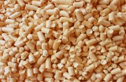
Древесные гранулы являются относительно новым и привлекательным видом топлива. При сжигании гранул утилизируются ресурсы, которые в противном случае оказались бы в составе мусора или попали бы на свалки. Гранулы обычно делаются из отходов (опилок и стружек) и используются в широких масштабах в системах централизованного теплоснабжения. Они производятся прессованием и имеют 1-3 см в длину и около 1 см в диаметре. Они чистые, обладают хорошим запахом и приятные на ощупь. Гранулы имеют низкую влажность (менее 10%) и высокую теплотворную способность по сравнению с другими видами древесного топлива. После прессования уменьшается объем, в результате увеличивается количество энергии в единице объема (энергетическая плотность). При сжигании гранул процесс обладает большей эффективностью и образуется малое количество остатка. В некоторых странах сжигание гранул освобождено от контроля состава дымовых газов.
Большой котел (2.5 МВт) для сжигания гранул и щепы, используемый в системах централизованного теплоснабжения
Существуют различные виды гранул. Некоторые производители используют связующие вещества для того, чтобы продлить продолжительность существования гранул. Другие производители не используют связующие вещества. Связующие вещества часто содержат фосфор, который попадает в дымовые газы при сжигании. Соединения фосфора участвуют в образовании кислотных дождей и увеличивают коррозию дымохода. Поэтому лучше использовать гранулы без связующих веществ.
Параметры древесных гранул:
Диаметр: 5 - 8 мм
Длина: макс. 30 мм
Плотность: мин. 650 кг/м3
Влажность: макс. 8% веса
Теплотворная способность: 4,5 - 5,2 кВт·ч/кг
2 кг гранул = 1 литр мазута
Существует много преимуществ использования древесных гранул в качестве топлива. Для производства гранул не нужно пилить деревья - они могут быть получены из древесных отходов. Сжигание гранул помогает избавиться от отходов деревообрабатывающей и мебельной промышленности. В гранулах обычно отсутствуют добавки для улучшения процесса горения. При сжигании гранул не образуется дым. Использование этого вида топлива уменьшает потребность в ископаемом топливе, сжигание которого приносит вред окружающей среде.
Стоимость древесных гранул может зависеть от места получения и времени года. Независимо от того, живете вы в городском доме или в сельской местности, древесные гранулы представляют для вас наиболее безопасный и здоровый способ отопления. Гранулы могут использоваться в различных типах зданий - гостиницах, ресторанах, магазинах, офисах, больницах и школах. До недавнего времени гранулы использовались в 500 тыс. домов в Северной Америке.

Гранулы могут поставляться потребителю в начале отопительного сезона
ДРЕВЕСНАЯ ЩЕПА
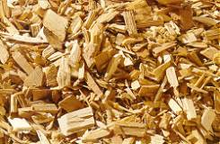
Древесная щепа получается из отходов лесной древесины. Древостой должен прореживаться при выращивании деловой древесины (для производства балок, досок и мебельных заготовок). Таким образом, щепа является результатом обычной эксплуатации лесного хозяйства. Древесина измельчается в специальных рубительных машинах (чипперах). Размер и вид щепы зависит от конкретной машины, однако типичная щепа имеет от 2 до 5 см в длину и 1 см в толщину. Влажность свежей щепы составляет около 50% (весовых) и значительно уменьшается в процессе сушки. Во многих странах, например, Дании, щепа производится для сжигания на станциях централизованного теплоснабжения. Щепа обычно доставляется автомобильным транспортом, поэтому станции ЦТ, оборудованные автоматическими котлами, должны иметь крытые хранилища объемом не менее 20 м3.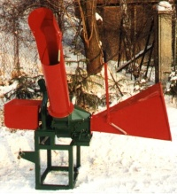 |
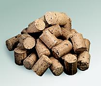 |
ПОТРЕБЛЕНИЕ ТОПЛИВА И ИНВЕСТИЦИОННЫЕ ЗАТРАТЫ
В этой таблице представлены сравнительные данные по разным видам топлива для односемейного дома площадью 150 м2 (тепловая нагрузка 12 кВт) в Австрии.
ТИПЫ КОТЛОВ ДЛЯ ЩЕПЫ И ГРАНУЛ
Существует три типа котлов с автоматической подачей для щепы и гранул:
Компактные устройства, в которых котел и бункер объединены.
Устройства с питателем, в которых котел и бункер отделены друг от друга.
Котлы с предтопком.
КОМПАКТНЫЕ УСТРОЙСТВА
В таких устройствах топливо подается из бункера с помощью
автоматического питателя. Количество подаваемого топлива определяется с
помощью термостата. Если вода в котле имеет малую температуру, подается
больше топлива, и наоборот. Компактные устройства прекрасно работают на
гранулах. Они менее приспособлены для щепы, которая имеет меньшую
энергетическую плотность. Для щепы загрузка топлива должна проводиться
слишком часто. Кроме того, влажность щепы нередко бывает слишком
высокой, в результате ее сгорание происходит неоптимальным образом.
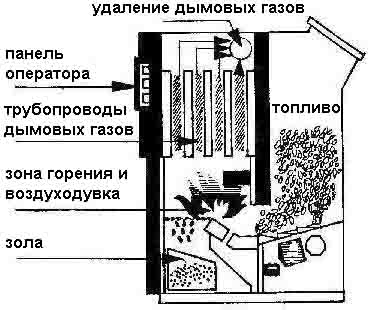
КОТЛЫ С ПИТАТЕЛЕМ
В таких котлах топливо также подается автоматически из бункера
с помощью шнекового конвейера. Топливо подается в нижнюю часть решетки,
где и происходит сгорание. Контроль также осуществляется с помощью
термостата. Лучшим видом топлива являются гранулы, однако сжигание щепы
также возможно в устройствах, разработанных специально для щепы. Щепа
при этом не должна быть слишком влажной, поэтому необходима ее
предварительная сушка. Лучшим способом сушки является выдерживание
древесины перед измельчением в рубительной машине. Щепа также может
сушиться после рубки, по крайней мере, в течение двух месяцев. Для этой
цели необходимо значительное пространство для ее хранения.
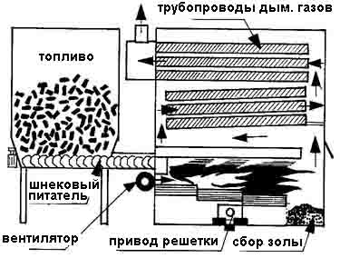
КОТЛЫ С ПРЕДТОПКОМ
В этом типе котлов сжигание топлива в основном происходит при высокой температуре в предтопках. Для поддержания высокой температуры предтопки имеют глиняную обмуровку. Котлы с предтопком пригодны для сжигания влажной древесной щепы. Не сгоревшие в предтопке газы дожигаются в котле. В некоторых котлах могут сжигаться и гранулы, однако существуют котлы, которые могут быть повреждены при сжигании сухого топлива. Поэтому перед приобретением котла необходимо проконсультироваться с производителем.

ЗАТРАТЫ
Котлы с автоматической подачей топлива стоят дороже, чем ручные котлы. Это объясняется относительной сложностью их конструкции. Обычно их применение экономически оправдано, если необходимо большое количество теплоты в течение года. Для стран ЕС это означает потребность в сжигании эквивалента 3000 литров мазута в год. Если домовладелец потребляет меньше тепла, ему лучше приобрести котел с ручной подачей дров. Если дом уже оборудован исправным котлом, а домовладелец думает о приобретении, самым дешевым вариантом будет приобрести устройство для подачи топлива. В Дании это обойдется в 3-4 тыс. Евро вместе с установкой. Описанные выше типы котлов будут стоить по крайней мере 50 тысяч крон. Несмотря на это, древесносжигающие котлы окупаются в процессе эксплуатации, потому что экономия на приобретении топлива составляет около 300 Евро на каждые 1000 литров замещенного мазута.
ТЕХНИЧЕСКОЕ ОБСЛУЖИВАНИЕ
Техническое обслуживание чрезвычайно важно. Без него
существует риск возгорания в дымоходе и отравления угарным газом.
Правильно работающий котел лучше использует топливо и, в результате,
экономит деньги. Период эксплуатации котла также зависит от
обслуживания.
Солома имеет близкую к древесине теплотворную способность и может быть использована в качестве топлива для котлов. Однако существует ряд трудностей, из-за которых солома используется преимущественно в больших котлах, обычно работающих в системах централизованного теплоснабжения и в сельском хозяйстве.
Солома - сложный вид топлива. Обеспечение котла соломой затруднено ее негомогенной структурой, относительно большой влажностью и большим объемом по сравнению с содержанием энергии. Объем соломы превышает в 10-20 раз объем угля с аналогичным содержанием энергии. Более того, 70% сгораемых компонентов соломы содержатся в летучих газах, выделяющихся в процессе сжигания. Большое содержание летучих компонентов требует специальной конструкции топки и организации потока воздуха в ней. Солома содержит соединения хлора, которые могут вызвать проблемы с коррозией при высоких температурах. Температура плавления соломенной золы относительно низкая из-за высокого содержания щелочных металлов. В результате могут возникать проблемы с золоудалением.
Системы централизованного теплоснабжения
Несмотря на перечисленные проблемы, в мире существует большое количество станций централизованного теплоснабжения, использующих солому в качестве топлива. Начиная с 80-х годов, только в Дании было построено более 70 таких станций. Их мощность варьируется от 0,6 до 9 МВт при средней мощности 3,7 МВт. На этих станциях используются так называемые тюки Хестона (Hesston bales), имеющие размеры 2,4x1,2x1,3 м и вес 450 кг. Конструкции станций предусматривают возможность использования резервного топлива в газовых или мазутных котлах для случаев большой пиковой нагрузки, ремонтов и аварий. Мощность соломосжигающих котлов обычно соответствует 60-70% максимальной нагрузки, что облегчает их эксплуатацию летом в условиях низкой нагрузки.
Соломосжигающие станции состоят из стандартных компонентов:
хранилище для соломы.
устройство для взвешивания соломы.
погрузчик.
конвейер.
устройство подачи топлива в котел (питатель).
котел.
устройство для очистки дымовых газов.
дымовая труба.
КОТЕЛ
Конвейер подает солому в нижнюю часть котла, где находится
массивная железная решетка. Здесь и происходит сжигание. Решетка обычно
делится на несколько зон сгорания, каждая из которых имеет собственный
вентилятор, подающий воздух через решетку. Сжигание может
контролироваться независимо в каждой зоне. Таким образом достигается
полное сжигание соломы. Большая часть горючих веществ (70%) в результате
нагрева выделяется в виде летучих компонентов, которые сгорают в
топочной камере над решеткой. Для обеспечения полного сгорания летучих
компонентов вторичный воздух подается через форсунки, установленные в
стенках котла. Из топочной камеры дымовые газы подаются в конвективную
зону котла, в которой большая часть тепла передается через стенки котла
циркулирующей воде. Конвектор обычно состоит из рядов вертикальных труб,
через которые пропускаются дымовые газы. В большинстве существующих
станций имеется экономайзер - теплообменник, установленный за
конвектором. В экономайзере происходит дополнительная передача тепла
воде, что приводит к увеличению эффективности системы в целом.
ТРЕБОВАНИЯ К КАЧЕСТВУ СОЛОМЫ
Солома, поставляемая для сжигания, должна удовлетворять определенным требованиям для того, чтобы уменьшить риск возникновения эксплуатационных проблем в процессе производства энергии. Хранение, подготовка, дозирование, подача, сжигание и экологические последствия перечисленных операций таят в себе возможность возникновения проблем. Влажность соломы является одним из самых важных критериев качества этого вида топлива. Обычно влажность варьируется в пределах 10-25%, но иногда может быть и выше. Теплотворная способность и цена соломы зависит от влажности.
Все тепловые станции определяют приемлемую максимальную влажность поставляемой соломы. Высокое содержание воды может вызвать проблемы при хранении и нарушения в работе станции в целом, а также уменьшение мощности и увеличение затрат на подготовку, дозирование и подачу соломы в котел (и, возможно, уменьшение КПД котла). Приемлемая максимальная влажность поставляемой соломы отличается для разных станций в пределах 18-22%. Разные виды соломы обладают различными свойствами при сгорании. Некоторые виды горят практически взрывообразно, почти не оставляя золы, другие горят медленно, оставляя на решетке "скелет" золы. Опыт, накопленный на разных станциях централизованного теплоснабжения, не всегда идентичен. Различия в процессе сжигания не всегда можно объяснить на основании обычных лабораторных измерений.
Системы отопления мощностью менее 1 МВт
Этот тип установок отличается от систем централизованного теплоснабжения и используется в основном в сельской местности. Использование соломы в качестве источника энергии в аграрном секторе началось в 70-х годах в результате энергетического кризиса, во время которого существовали субсидии на установку соломосжигающих котлов. За последние 10-15 лет концепция таких котлов была развита от маленьких и примитивных котлов, требующих наличия обслуживающего персонала, сжигающих тюки, подающиеся вручную, и имеющих проблему с дымовыми газами, до больших котлов, сжигающих тюки часто с автоматической подачей, с загрузкой топлива 1-2 раза в сутки.
КОТЛЫ С ПЕРИОДИЧЕСКОЙ ПОДАЧЕЙ ТОПЛИВА
Ранее на рынке преобладали котлы для маленьких тюков. Сегодня большая часть котлов с периодической подачей приспособлена для больших тюков (круглые и прямоугольные тюки Хестона). Котлы, использующие большие тюки, хорошо приспособлены для обеспечения годовой потребности в тепле, соответствующей потреблению по крайней мере 10000 литров мазута. Имеются котлы разных размеров, использующие одновременно от одного круглого тюка (200-300 кг) до двух тюков Хестона (1000 кг). Обычно котел сжигает тюки последовательно. Трактор, оборудованный захватом, доставляет тюк на решетку через открытую переднюю часть котла. Для обеспечения хорошего сжигания и уменьшения уноса частиц в дымовых газах скорость и количество подаваемого в котел воздуха могут отличаться в верхней и нижней части топочной камеры.
 |
Ранее котлы с периодической загрузкой вызывали много проблем в случае использования соломы низкого качества. Кроме того, возникали сложности с контролем подачи воздуха. В последних моделях эти проблемы решены. Содержание воды, однако, должно поддерживаться не выше 15-18%. Сегодня максимальная эффективность котлов достигает 75% при содержании СО ниже 0,5%. Десять лет назад типичным значением эффективности было 35%. |
КОТЛЫ С АВТОМАТИЧЕСКОЙ ПОДАЧЕЙ ТОПЛИВА
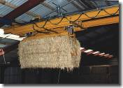
Интерес к котлам с автоматической загрузкой вырос потому, что популярные котлы с периодической подачей тюков малого размера требуют наличия значительного обслуживающего персонала. Было разработано несколько типов автоматических котлов, однако все они включают дозирующее устройство, которое автоматически и постоянно снабжает котел соломой. Такое устройство может работать с целыми тюками, измельченной соломой или соломенными гранулами.КОТЛЫ ДЛЯ СОЛОМЕННЫХ ТЮКОВ
Устройство, состоящее из рыхлителя и режущего приспособления, разделяет тюки на отдельные части разных размеров. Тюки подаются в него с помощью конвейера. Количество поступающей соломы часто регулируется с помощью изменения скорости конвейера. После измельчения солома перемещается с помощью червячного транспортера или вентиляторов. Если используются вентиляторы, то расстояние до котла может быть большим, однако при этом используется большее количество энергии.
На практике рыхлитель не режет или разрывает солому, а
разделяет ее на сегменты, в которых солома была спрессована
пресс-подборщиком. Для обеспечения постоянного количества подаваемой
соломы рыхлитель обычно оборудован удерживающим устройством. Большинство
рыхлителей также имеют ножи для измельчения от образования больших
фракций соломы.
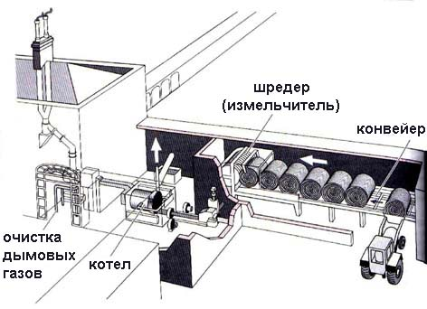
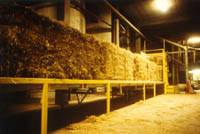 |
В автоматических котлах сжигание происходит одновременно с подачей соломы в топку. Количество подаваемого воздуха соответствует количеству соломы и регулируется с помощью переменной заслонки перед вентилятором. Это обеспечивает оптимальное сжигание и высокий коэффициент использования топлива, а значит и уменьшение эмиссии пыли по сравнению с ручными котлами, не имеющими регулировки подачи воздуха. Возгорание соломы в автоматических котлах не вызывает проблем, поскольку подача топлива происходит непрерывно. |
КОТЛЫ ДЛЯ СОЛОМЕННЫХ ГРАНУЛ
Интерес к использованию соломенных гранул в качестве источника энергии вырос в течение последних лет. В настоящее время производство и использование соломенных гранул относительно невелико. Интерес вызван однородной и удобной структурой этого вида топлива, прекрасно приспособленного для транспортировки в танкерах и использования в автоматических теплоснабжающих установках. Однако существуют еще нерешенные проблемы с золоудалением в случае использования соломенных гранул в малых котлах.
Отопительные устройства на гранулах обычно используются в
индивидуальных домах. Обычно они состоят из котла и закрытой емкости для
топлива (соломенных гранул). Червячный питатель подает гранулы в топку
котла. Питатель работает периодически, а количество подаваемого топлива
регулируется величиной интервала между его последовательными
включениями. Воздух подается с помощью вентилятора. Количество золы в
малых котлах обычно равно 4% от веса использованной соломы.
ПРОИЗВОДСТВО ДРЕВЕСНОГО УГЛЯ - ПИРОЛИЗ
Производство древесного угля охватывает широкий диапазон технологий от простых и рудиментарных земляных устройств до сложных, обладающих большой мощностью реторт. Использование различных технологий приводит к получению древесного угля разного качества. Улучшение технологии производства древесного угля направлено на относительное увеличение угля на выходе и улучшение его качественных характеристик.
Типичные параметры качественного древесного угля:
Содержание золы - 5%.
Содержание углерода - 75%.
Содержание летучих компонентов - 20%.
Плотность - 250-300 кг/м3.
Физические параметры - Умеренно рыхлый.
Усилия по оптимизации производства древесного угля направлены на оптимизацию приведенных выше параметров при минимальных инвестициях и затратах на обслуживающий персонал и максимальном выходе угля по отношению к количеству древесины на входе.
Производство древесного угля состоит из шести главных этапов:
- Подготовка древесины.
- Сушка или уменьшение влажности.
- Предварительная карбонизация - уменьшение количества летучих компонентов.
- Карбонизация - дальнейшее уменьшение количества летучих компонентов.
- Завершение карбонизации - увеличение содержания углерода.
- Охлаждение и стабилизация древесного угля.
Первый этап состоит из сбора и подготовки основного сырья - древесины. Для малых производителей производство древесного угля является дополнительной и периодической деятельностью, позволяющей уменьшить затраты на приобретение топлива или повысить доходы от его продажи. Соответственно, для них подготовка сырья заключается в простом сборе сучьев и веток. Для этих целей тратится незначительное время. Перед использованием древесина сушится. Уменьшение содержания воды облегчает в дальнейшем процесс карбонизации. В случае массового производства угля проводится очистка древесины от коры. По существующим оценкам, использование древесины с корой приводит к образованию древесного угля, имеющего зольность около 30%. В случае предварительного удаления коры зольность угля уменьшается до 1-5%, улучшая параметры сгорания древесного угля.
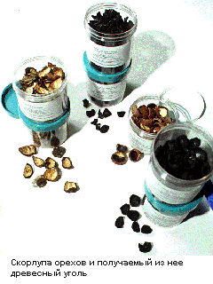
Второй этап получения древесного угля выполняется при температурах от 110 до 220 оC. Этот этап заключается преимущественно в уменьшении количества воды в древесных порах, воды, содержащейся в клетках и химически связанной воды.Третий этап проводится при температурах от 170 до 300°C и часто называется этапом предварительной карбонизации. На этом этапе выделяются пиролизные жидкости в форме метанола и уксусной кислоты, а также малое количество окиси и двуокиси углерода.
Четвертый этап выполняется при температурах от 200 до 300°C, когда образуется основная часть легких смол и пиролизных кислот. В конце этого этапа образуется древесный уголь, являющийся результатом карбонизации древесных остатков. На пятом этапе при температурах от 300 до максимальной 500°C завершается выделение летучих компонентов и увеличивается содержание углерода в угле.
На шестом этапе полученный уголь охлаждают в течение, по крайней мере 24 часов, чтобы увеличить его устойчивость и снизить риск самопроизвольного возгорания.
Наконец, финальный этап заключается в
извлечении угля, упаковке, транспортировке, оптовой и розничной продаже
потребителям. Выполнение этого этапа может значительно повлиять на
качество поставляемого потребителям угля. Уголь хрупок, поэтому
подготовка и транспортировка на большие расстояния может увеличить
содержание мелкой фракции в нем до 40%. Это значительно уменьшает
ценность угля. Упаковка в мешках позволяет существенно уменьшить
измельчение.
Газификация древесины называется также газогенерацией или сухой перегонкой. Суть процесса заключается в производстве горючего газа посредством нагрева древесины. Монооксид углерода, метиловый газ, метан, водород, газообразные углеводороды и другие компоненты в различных пропорциях могут быть получены с помощью нагрева или сжигания древесины в условиях отсутствия или недостатка кислорода. Эта цель может быть достигнута в топочных устройствах, ограничивающих поступление воздуха извне, в результате чего сжигание происходит не полностью. Сходным процессом является нагрев древесины в закрытой емкости с использованием внешнего источника тепла. В разных процессах получаются разные продукты. Если при сжигании древесины обеспечить необходимое количество кислорода, то в процессе такого сжигания образуются двуокись углерода, вода, небольшое количество золы (соответствующее содержанию неорганических веществ) и тепло. Этот тип сжигания реализуется в обычных древесносжигающих печах. После начала процесса горения можно ограничить поступление воздуха. При этом горение будет продолжаться, но с частичным сгоранием. В случае полного сгорания углеводорода (древесина в основном состоит из углеводородов) кислород объединяется с углеродом, а также с водородом. В результате чего получаются CO2 (двуокись углерода) и H2O (вода). Ограниченное количество воздуха и тепло обеспечивают продолжение неполного сгорания. В этих условиях один атом кислорода объединяется с одним атомом углерода, в то время как водород взаимодействует с кислородом лишь частично. В результате получается монооксид углерода, вода и газообразный водород. Кроме того, образуются и другие компоненты, например, углерод в виде дыма. Под воздействием тепла разрываются химические связи в молекулах сложных углеводородов, содержащихся в древесине (а также в любом другом углеводородном топливе). Одновременно в процессе объединения атомов углерода и водорода с кислородом выделяется тепло. Таким образом, процесс поддерживает сам себя. Если количество воздуха недостаточно, то в результате такого процесса образуется достаточно тепла для разложения молекул древесины, но продуктами этого процесса будут монооксид углерода и водород - горючие газы. Другие продукты неполного сгорания - это преимущественно диоксид углерода и вода.
Газификация представляет собой простой способ получения газообразного топлива из твердой древесины. В отличие от громоздкой древесины, газ удобен и может использоваться в различных существующих устройствах, не последним из которых является двигатель внутреннего сгорания.
При сжигании древесины образующаяся вода при определенных условиях может участвовать в процессе сухой возгонки. Древесина также содержит другие химические элементы от алкалоидов до минералов, которые тоже участвуют в этом процессе. В процессе возгонки древесины образуются метан, метиловый газ, водород, углекислый и угарный газы, древесный спирт, углерод, вода, а также многие малые добавки. Количество метана может достигать 75%. Метан представляет собой простой углеводород, содержащийся в природном газе, который также может быть получен в процессе анаэробного бактериального разложения органических веществ (биогаз или болотный газ). Он имеет высокую теплотворную способность и прост в использовании. Метиловый газ имеет отношение к метанолу (древесному спирту) и может сжигаться непосредственно или после превращения в метанол, который представляет собой высококачественное жидкое топливо, пригодное для сжигания в незначительно модифицированных двигателях внутреннего сгорания. Очевидно, что оба базовых процесса получения древесного газа - неполное сжигание и сухая возгонка - приводят к образованию удобного топлива, которое может заместить природные ископаемые газы (природный газ или такие сжиженные газы, как пропан или бутан). Он может сжигаться в существующих топочных устройствах или использоваться в качестве топлива для двигателей внутреннего сгорания при соблюдении некоторых важных мер предосторожности.
Газогенераторы
Простейшим газогенератором является резервуар,
представляющий собой перевернутый конус (воронку). Закрывающееся
отверстие в верхней части позволяет пользователю загружать опилки. В
верхней части также имеется отверстие для отвода газа. В нижней части
"воронка" открыта. Здесь происходит процесс горения. После загрузки
(образуется естественная пробка) опилки поджигаются в нижней части с
помощью, например, пропанового факела. Опилки начинают тлеть. Процесс
поддерживается с помощью вакуума, создаваемого воздуходувкой или
двигателем внутреннего сгорания. Газы поднимаются через пористую
древесную массу, частично фильтруясь при этом, и покидают устройство в
верхней части. Здесь газы вновь фильтруются и, при необходимости,
подвергаются обработке. Создание вакуума обеспечивает также и
поступление воздуха, необходимое для поддержания процесса. Описанный
газификатор примитивен. Его работу трудно контролировать, особенно, если
горение происходит в верхнем слое загруженного топлива. Поскольку в
конструкции не предусмотрен контроль равномерного горения, то возможно
сквозное прогорание слоя. После того, как огонь появился на поверхности,
количество поступающего воздуха резко увеличивается. При этом полностью
сгорают как твердое сырье (опилки), так и выделяющиеся летучие
компоненты. Таким образом, контроль процесса зависит от малой пористости
опилок. Например, использование веток в описанной конструкции
невозможно из-за того, что количество воздуха будет слишком большим, и
вместо тления будет происходить полное сжигание при высокой температуре.
Такие устройства непригодны для длительного получения газа. Однако они
дешевы и могут работать с разными видами сырья. Для устойчивой
длительной эксплуатации древесные газификаторы должны иметь более
сложную систему контроля подачи воздуха и топлива. Существуют различные
способы достижения этой цели. Например, если описанный выше газификатор
полностью закрыт, то можно осуществить контроль подачи воздуха. В этом
случае можно успешно сжигать большее количество древесины.
Преобразование биомассы в этанол
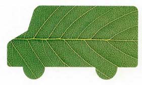
Спирт может использоваться в качестве топлива в двигателях
внутреннего сгорания либо самостоятельно, либо в качестве добавки к
бензину. Существует много видов доступного сырья, из которого можно
производить спирт, используя существующие улучшенные и проверенные
технологии. Спирт обладает прекрасными показателями для сжигания.
Горение происходит очень чисто и с высоким октановым числом.
Двигатели внутреннего сгорания, оптимизированные
для работы на спирту, на 20% эффективнее двигателей, работающих на
бензине. А двигатели, созданные специально для работы на спирту, могут
быть эффективнее на 30%. Более того, существуют многочисленные
экологические преимущества: уменьшение эмиссии свинца, CO2, SO2, частиц углеводородов и СО.
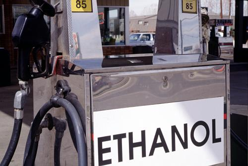
Этанол является наиболее важным спиртовым топливом, которое может быть получено преобразованием крахмала, содержащегося в биомассе (например, кукурузе, картофеле, свекле, сахарном тростнике, пшенице) в спирт. При этом используется тот же процесс ферментации, что и при изготовлении спиртных напитков. Для того, чтобы превратить сложные сахариды в более простые формы и спирт, используются дрожжи и тепло. Разработан относительно новый процесс для производства этанола, в котором преобразуется целлюлоза, содержащаяся в сырье (древесина, трава, сельскохозяйственные отходы). Целлюлоза представляет собой иную форму углеводов, которая может быть преобразована в простые сахара. Этот процесс относительно новый, не получивший коммерческого распространения. Однако в перспективе он может быть развит с использованием широко распространенного дешевого сырья.
В настоящее время в США производится около 6 миллиардов литров этанола в год. Потенциал производства этанола в мире вырос по сравнению с 1977 годом в восемь раз и достигает 20 миллиардов литров в год. Латинская Америка во главе с Бразилией является мировым лидером в производстве биоэтанола. Такие страны, как Бразилия и Аргентина, уже сегодня производят большое количество этанола, другие, как Боливия, Коста-Рика, Гондурас и Парагвай и т. д., серьезно думают об этой возможности. Использование спирта в виде топлива стремительно развивается в некоторых африканских странах: Кении, Малави, ЮАР и Зимбабве. Другие (Маврикий, Свазиленд, Замбия) имеют для этого большой потенциал. В некоторых странах сахарная промышленность модернизирована, что привело к снижению производственных затрат. Многие из этих стран не имеют выхода к морю, в результате продажа производимой в них мелассы на мировом рынке экономически нецелесообразна. С другой стороны, импорт нефти в эти страны также обходится дорого. Выходом для этих стран может стать диверсификация сахарной промышленности, отказ от импорта энергоносителей, улучшение использования местных ресурсов и, косвенно, улучшение экологического менеджмента. Для этих стран, особенно с учетом относительно низкой потребности в автомобильном топливе, использование этанола в качестве топлива весьма привлекательно. Общий интерес к топливному этанолу значительно вырос за последнее десятилетие, несмотря на падение цен на нефть после 1981 года. В развивающихся странах этот интерес объясняется низкими ценами на сахар на международном рынке, а также стратегическими причинами. В развитых странах главной причиной является растущая экологическая обеспокоенность, а также возможность решения некоторых распространенных социально-экономических проблем, таких, как использование сельскохозяйственных земель и перепроизводство продовольствия. Поскольку понимание ценности этанола возрастает, все большее количество политических мер предпринимается для поддержки использования этанола в качестве топлива.
Поскольку химические свойства этанола отличаются от бензина, он требует несколько иного обращения. Например, испарение этанола происходит медленнее, чем бензина. Это означает, что в случае использования чистого этанола (100%) холодный запуск двигателя может быть проблемой. Однако эта проблема может быть решена с помощью изменения конструкции двигателя и состава топлива. Изменение конструкции также позволяет увеличить эффективность двигателя. Несмотря на то, что теплотворная способность литра этанола составляет 2/3 от теплотворной способности литра бензина, настройка двигателя для этанола может возместить половину этой разницы. Еще одним преимуществом этанола является то, что в случае разлива он, как органический продукт, разлагается быстрее и проще, чем бензин.
Использование этанола даже в качестве малых добавок
(например, Е10 - 10% этанола и 90% бензина) имеет экологические
преимущества. Тесты показали, что Е10 образует меньше угарного газа
(СО), диоксида серы (SO2) и углекислого газа (СО2),
чем бензин марки RFG. Добавки этанола уже помогли решить проблему с
угарным газом в таких городах США, как Денвер и Феникс. Однако Е10
образует больше летучих органических компонентов (VOC), пыли и оксидов
азота (NOx), чем бензин RFG. При использовании большего количества
этанола (Е85, с 15% бензина) или почти чистого этанола Е100 все виды
перечисленных загрязнений образуются в меньшей степени.
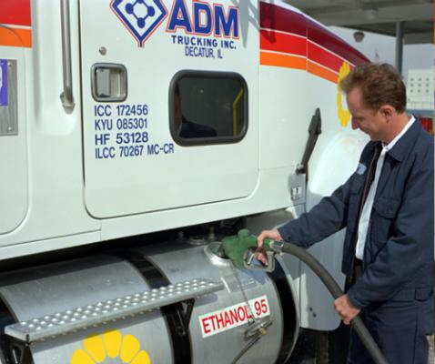
Производство этанола с помощью ферментации состоит из четырех этапов:
а) выращивание, сбор и доставка сырья на спиртовый завод;
б) подготовка и преобразование сырья в субстрат, пригодный для ферментации;
в) ферментация субстрата с получением этанола, очистка методом дистилляции;
г) переработка остатков после ферментации для уменьшения количества отходов и получения побочных продуктов.
Технология ферментации и ее эффективность быстро улучшались в течение последнего десятилетия. Были сделаны некоторые инновационные изменения в использовании новых материалов. Уменьшены затраты на производство. Однако технологические изменения больше влияют на доступность и стоимость сырья и, в результате, на стоимость жидкого топлива, чем на рост рынка в целом.
Многочисленные виды сырья для производства этанола можно разделить на три типа:
а) сахар, получаемый из сахарного тростника, сахарной свеклы или
фруктов, который может быть непосредственно преобразован в этанол;
б) крахмалы из зерновых культур и корнеплодов, которые должны быть
подвержены гидролизу в присутствии ферментов для получения
ферментируемого сахара;
в) целлюлоза из древесины, сельскохозяйственных отходов и т.д.,
которая должна быть превращена в сахариды с использованием либо кислот,
либо ферментативного гидролиза.
Последний вариант, однако, остается демонстрационным и пока считается экономически нецелесообразным. Основной интерес представляет использование сахарного тростника, кукурузы, древесины, маниока, сорго, и до некоторой степени, зерновых культур и иерусалимского артишока. Этанол также получается из лактозы, содержащейся в отходах сыворотки (например, в Ирландии она используется для производства спиртных напитков, а в Новой Зеландии - для топливного этанола). Проблемой, которую еще предстоит решить, является сезонность растительных культур. Это означает, что зачастую необходимо найти альтернативный источник сырья для обеспечения круглогодичной работы производственных мощностей.

Производство топливного этанола

Этаноловый завод в Индиане (США)

Отходы переработки сахарного тростника (багасса)
Сахарный тростник остается самым значительным сырьем для прозводства этанола в мире. Он является одним из самых производительных растений - при оптимальных условиях выращивания около 2,5% энергии Солнца усваивается в процессе фотосинтеза. Другим преимуществом этой культуры является то, что жом сахарного тростника - побочный продукт производства этанола - может быть использован в качестве местного источника электрической энергии. Верхняя часть и листья этого растения также могут использоваться для этой цели. Хорошие спиртовые заводы, работающие на сахарном тростнике, могут обеспечивать себя полностью электроэнергией и даже производить ее в избытке.
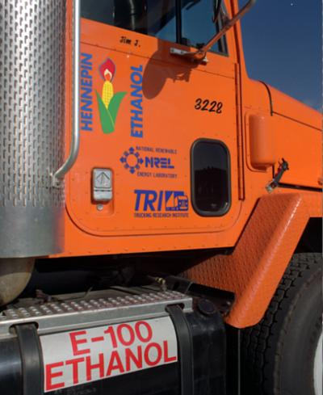

Метанол является другим видом спиртового топлива, которое получается из биомассы или угля. Однако в настоящее время метанол производится преимущественно из природного газа и ограниченно используется в качестве топлива для демонстрационных и спортивных целей. По этой причине мы не будем рассматривать его в данной работе. Кроме того, считается, что метанол не обладает всеми экологическими преимуществами, свойственными этанолу.
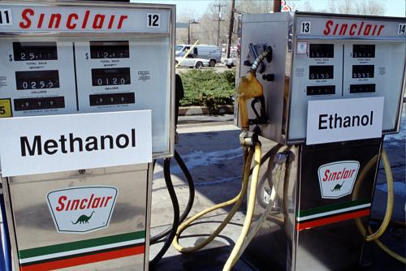
БРАЗИЛИЯ
В Бразилии этанол используется в качестве транспортного топлива с 1903 года. В настоящее время в стране реализуется самая крупная в мире программа развития этанола. Начиная с создания Национальной Программы Развития Этанола "ProAlcool's" в 1975 году, в стране произведено более 90 миллиардов литров этанола из сахарного тростника. Общая мощность 661 завода достигла в 1988 году 16 миллиардов литров в год. В 1989 году 12 млрд литров этанола замещали 200 000 баррелей импортированной нефти в день. Почти 5 миллионов автомобилей в настоящее время используют чистый биоэтанол и 9 миллионов ездят на бензине с добавкой 20-22% этанола (производство автомобилей для чистого этанола было остановлено в 1979 году).
Наряду с главной целью программы "ProAlcool's" - уменьшить импорт нефти, другими целями были защита плантаций сахарного тростника, увеличение использования местного возобновляемого энергоресурса, развитие спиртовой промышленности и решение социально-экономических и региональных проблем с помощью расширения культивируемых земель и создания новых рабочих мест. Несмотря на то, что программа "ProAlcool's" планировалась централизованно, этанол полностью производится децентрализованным частным сектором.
Программа "ProAlcool's" ускорила темпы технологического развития и уменьшила затраты в сельском хозяйстве и некоторых отраслях промышленности. В Бразилии развит современный и эффективный аграрный бизнес, способный выдерживать зарубежную конкуренцию. Производство спирта является одним из крупнейших секторов бразильской промышленности. Бразильские фирмы экспортируют оборудование для производства спирта во многие страны. Кроме того, в стране была развита спиртовая химическая промышленность.
Химические заводы, основанные на переработкt спирта, более подходят для многих развивающихся стран, чем нефтяные. Они меньше, требуют меньшего количества инвестиций, могут работать в аграрном секторе и использовать местное сырье.
СОЦИАЛЬНОЕ РАЗВИТИЕ
Создание рабочих мест в сельской местности оказалось главным
достоинством программы "ProAlcool's" - производство этанола в Бразилии
требует больших затрат человеческого труда. Около 700 тысяч рабочих мест
было создано непосредственно, и в 3-4 раза больше косвенным образом.
Количество инвестиций, необходимых для создания одного рабочего места в
производстве этанола, варьируется от 12 до 22 тысяч американских
долларов, что, например, в 20 раз меньше аналогичного показателя в
химической промышленности.
ЭКОЛОГИЧЕСКОЕ ВОЗДЕЙСТВИЕ
Возможное загрязнение окружающей среды было связано с реализацией программы "ProAlcool's". Влияние на окружающую среду может быть значительным из-за большого количества получаемых продуктов перегонки и возможного их попадания в воду. На 1 литр этанола спиртовой завод производит от 10 до 14 литров жидких продуктов с высоким показателем биологической потребности в кислороде. На последующих стадиях выполнения программы были предприняты значительные усилия по решению этих экологических проблем. Сегодня используются альтернативные технологические решения, уменьшающие количество жидких отходов, превращая их в удобрения, корм для животных, биогаз и т.д. Эти меры значительно уменьшили уровень загрязнения в крупных городах, например, Сан - Пауло. Использование отходов в качестве удобрений для сахарного тростника позволяет увеличить его урожайность на 20-30%.
ЭКОНОМИЧЕСКИЕ АСПЕКТЫ
Несмотря на многочисленные исследования, выполненные в отношении практически всех аспектов выполнения программы в Бразилии, до сих пор существуют разногласия в оценке ее экономических аспектов. Это объясняется тем, что затраты на производство этанола и его экономическая ценность для потребителя и для страны зависят от многих видимых и невидимых факторов, делающих затраты зависящими от места и переменными во времени, иногда ото дня ко дню. Например, производственные затраты зависят от местонахождения, конструкции и управления установкой. Оказывается важным, является ли установка независимой, работающей рядом с плантациями, специализирующимися на производстве спирта, или же она входит в состав плантации, специализирующейся на экспорте сахара. С другой стороны, экономическая ценность этанола для потребителя зависит преимущественно от мировых цен на сырую нефть и сахар, а также от того, используется ли этанол в обезвоженной форме в качестве добавки к бензину, или же в качестве самостоятельного топлива без предварительного удаления воды.
В период между 1979 и 1988 годами стоимость производства этанола ежегодно снижалась на 4% за счет оптимизации выращивания и переработки сахарного тростника. Стоимость производства этанола можно снизить еще, если утилизировать отходы производства, преимущественно жом (багассу). В этом случае возможно уменьшение затрат до уровня 0,15 $/литр, что сделает этанол конкурентоспособным по отношению к бензину даже в условиях низких цен на нефть начала 90-х годов. Подсчитано, что в случае использования газификаторов/паровых турбин для производства электроэнергии из жома одновременно с производством этанола затраты на электроэнергию составят 0,045 $/кВт·ч.
Несмотря на проблемы, программа является успешным примером достижения поставленных целей. Цель программы была достигнута вовремя, а ее стоимость оказалась ниже предсказанной. В процессе реализации программы и увеличения мощности сахарной и спиртовой промышленности была развита собственная экспертиза в этой области. Увеличена независимость страны, достигнута экономия в балансе международной торговли, обеспечена база технологического развития как в производстве, так и в потреблении этанола, созданы новые рабочие места. Успех Бразилии обусловлен следующими факторами: политикой и поддержкой правительства, экономическими и финансовыми стимулами, вовлечением частного сектора, технологическим потенциалом производства этанола, длительным историческим опытом производства и использования этанола, сотрудничеством между правительством, производителями сахарного тростника и автомобильной промышленностью, адекватными человеческими ресурсами, обилием плантаций дешевого сахарного тростника в хороших климатических условиях и на пригодных землях, а также наличием сахарной промышленности. В результате потребовались относительно небольшие инвестиции для организации производства этанола.
ЗИМБАБВЕ
Зимбабве является примером относительно небольшой страны,
которая предпринимала попытки решить проблему импорта нефти с помощью
укрепления собственной агропромышленной базы. Получение независимого и
надежного источника жидкого топлива считалось оптимальной стратегией,
учитывая географическое положение страны, неустойчивую политическую
ситуацию, ограничения в международной торговле, а также другие
экономические соображения. Зимбабве не имеет собственных источников
нефти, поэтому все продукты переработки нефти импортировались. На эти
цели уходило 120 млн амер. долларов или 18% дохода страны от
международной торговли. С 1980 года Зимбабве является в Африке пионером
производства этанола для использования в качестве добавок к бензину.
Первоначально использовалась смесь бензина с 15% спирта. С увеличением
его потребления сделан переход на использование 12% добавки. Это
единственный вид топлива, доступный на рынке для автомобилей с искровым
зажиганием. Начиная с 1983 года, производство этанола в стране
составляет 40 млн литров в год.
Существует два базовых типа разложения или ферментации: естественный и искусственный. Понятие "анаэробный процесс" означает процесс в условиях отсутствия воздуха (кислорода). Поэтому любое разложение или ферментация органических материалов при отсутствии воздуха (кислорода) называется анаэробным сбраживанием или ферментацией, которая может происходить либо в естественных, либо в искусственных условиях.
Свойства сбраживания органических материалов
Когда исходные органические материалы сбраживаются в замкнутом объеме без доступа воздуха, только некоторая часть отходов превращается в биогаз. Материалы сбраживаются частично, и либо накапливаются внутри метантенка, либо удаляются вместе со сброженным раствором. Способность к сбраживанию и другие связанные с ним свойства органических веществ (ОВ) выражаются следующими параметрами:
Влажность
Это вес воды, которую вещество теряет в процессе сушки при
100°C. На практике процесс сушки проводится в течение 48 часов в печи до
полного удаления воды. Содержание воды определяется разницей между
весом ОВ до и после сушки.
Содержание твердого вещества
Вес сухого вещества (СВ) или содержание твердого вещества (ТВ)
описан выше. ТВ представляет собой "сухой вес" ОВ (отметим, что после
сушки ОВ на солнце в нем остается около 20% воды). Значение 10%
влажности означает, что 100 граммов вещества содержат 10 граммов воды и
90 граммов СВ. СВ или ТВ состоит из органических веществ (или летучего
ТВ) и инертного ТВ (зола).
Летучие компоненты
Вес сгораемого органического вещества (ОВ) в условиях нагрева СВ
(ТВ) до температуры 550°C в течение трех часов называется летучим
твердым веществом (ЛТВ) или летучей материей. Для высокотемпературного
нагрева СВ (ТВ), содержащегося в ОВ, используются муфельные печи. После
нагрева остаются только неорганические компоненты (зола). Другими
словами, ЛТВ представляет собой долю ТВ, которая сгорает при нагреве до
550°C. Неорганические вещества, остающиеся после нагрева, называются
связанным (нелетучим) ТВ или золой. Именно летучие твердые вещества
могут быть превращены бактериями (микробами) в биогаз.
Зола
Вещество, остающегося после нагревания до 550°C, называется
неорганическим остатком или золой (FS). Речь идет о биологически
инертных веществах.
Системы для производства биогаза
Биогаз, представляющий собой преимущественно смесь метана и двуокиси углерода, производится как в естественных, так и в искусственных условиях. Однако с технико-экономической точки зрения, производство биогаза в искусственных системах представляет собой лучший и наиболее удобный метод. Образование биогаза - биологический процесс, имеющий место в условиях отсутствия воздуха (кислорода), в процессе которого органические вещества преобразуются в метан (CH4) и углекислый газ (CO2). В результате реализации этого процесса получается прекрасное органическое удобрение, и также может быть получен гумус. Одним из определяющих требований для производства биогаза является наличие герметичного контейнера. Биогаз может быть получен только в анаэробных условиях, при которых анаэробные бактерии, живущие только в отсутствии кислорода, преобразуют органическое вещество. Герметичный контейнер, используемый для производства биогаза в искусственных условиях, называется дайджестер (метантенк) или реактор.
Состав биогаза
Биогаз представляет собой бесцветный, не имеющий
запаха горючий газ, получающийся из органических отходов и биомассы в
процессе декомпозиции (ферментации). Биогаз может быть получен из
животных и растительных отходов, отходов человеческой деятельности,
растительных культур, листьев, водных растений и т.д. Состав биогаза
приведен ниже:
Метан (CH4) : 55-70%
Двуокись углерода (CO2) : 30-45%
Сероводород (H2S) : 1-2%
Азот (N2) : 0-1%
Водород (H2) : 0-1%
Монооксид углерода (CO) : следы
Кислород (O2) : следы
Свойства биогаза
Биогаз горит голубым пламенем. Он имеет теплотворную способность 4500-5000 ккал/м3 при содержании метана 60-70%. Величина теплотворной способности прямо пропорциональна содержанию метана, которое, в свою очередь, зависит от сырья, используемого для получения биогаза. Из-за различной теплотворной способности использование горелок, предназначенных для других газов (бутан, сжиженный нефтяной газ и др.) дает меньшую эффективность. Использование специальных биогазовых горелок позволяет добиться тепловой эффективности 55-65%.
Биогаз - нетоксичный, бесцветный, безвкусный, не имеющий запаха стойкий газ. Однако, в случае наличия малого количества сероводорода, биогаз может иметь слабый запах тухлых яиц. Этот запах заметен не всегда и практически всегда отсутствует в случае сжигания биогаза. Сжигание биогаза в воздушной среде образует голубое пламя с выделением большого количества тепловой энергии. Из-за наличия большого количество углекислого газа биогаз является безопасным (невзрывоопасным) топливом для сельских домов.
Один кубометр биогаза содержит 4500-5500 ккал/м3 тепловой энергии и при сжигании в специализированных горелках, имеющих эффективность 60%, может обеспечить 2700-3200 ккал/м3 тепла. По определению, одна ккал - это тепло, требуемое для того, чтобы поднять температуру 1 кг (литра) воды на один градус. Следовательно, полезное тепло (в среднем 3000 ккал/м3), содержащееся в одном кубометре биогаза, является достаточным для доведения до кипения 100 кг (литров) воды с начальной температурой 200 оC или обеспечения в течение 4-5 часов свечения лампы мощностью 60 - 100 Вт.
Образование биогаза
Процесс декомпозиции (ферментации, сбраживания) органических (биодеградируемых) материалов с образованием метана происходит с участием группы микроорганизмов, принадлежащих к семейству метановых бактерий, и представляет собой сложный биологический и химический процесс. На практике он часто делится на две основные стадии - образование кислот (сжижение) и образование газа (газификация). Однако процессы анаэробной ферментации при более тщательном рассмотрении могут быть разбиты на четыре стадии:
- Гидролиз.
- Образование кислот.
- Гидрогенизация.
- Образование метана.
В то же время для практических целей образование метана
достаточно представить как процесс, состоящий из трех этапов -
гидролиза, образования кислот и метана. В субстрате внутри метантенка
работают две группы бактерий: неметаногеновые и метаногеновые.
Неметаногены при нормальных условиях могут развиваться при кислотности
(рН) 5,0-8,5 в температурном диапазоне 25-42°C. Идеальными условиями для
метаногенов является рН 6,5-7,5 и температурный диапазон 25-35°C. Это
так называемые мезофильные бактерии, которые имеются во всех простых
биогазовых установках и могут существовать в широком диапазоне
температур от 15 до 40°C. Однако эффективность работы бактерий очень
быстро снижается при понижении температуры субстрата ниже 20°C и
практически равна нулю при температуре ниже 15°C. В Индии, например,
мезофильные бактерии могут существовать в биогазовых установках, в
которых не используется нагрев или теплоизоляция метантенка. Это
обеспечивает малую стоимость установок, используемых в индивидуальных
хозяйствах.
Существуют две другие группы анаэробных бактерий, а именно
психрофильные и термофильные бактерии. Первая группа может существовать
при низких температурах в диапазоне 10-15°C, однако целесообразность
использования этих бактерий в практических целях не установлена до сих
пор. Термофильные бактерии работают при значительно более высоких
температурах в диапазоне от 45 до 55°C и являются очень эффективными.
Они более полезны в крупных биогазовых установках, особенно в тех, где в
качестве сырья используются горячие стоки. В обоих случаях устройство
биогазовых установок должно быть сложным, поэтому описываемые группы
бактерий не нашли применения в простых сельскохозяйственных биогазовых
установках индийского типа.
Устройство биогазовых установок
Биогазовая установка (БУ) представляет собой герметичный контейнер, который обеспечивает процесс ферментации органических материалов в анаэробных условиях. Другими названиями может быть "Биогазовый Дайджестер", "Биогазовый Реактор", "Метановый Генератор", "Метановый Реактор". Рециркуляция и обработка органических отходов (биодеградируемых материалов) в процессе анаэробного сбраживания (ферментации) производит не только биогаз в качестве чистого и удобного топлива, но и прекрасное обогащенное удобрение в виде сброженного навоза. Поэтому БУ по существу представляют собой фабрики по производству биоудобрений. Исходное сырье (обычно в гомогенной жидкой форме) подается в метантенк через входную трубу, обычно из емкости для предварительного хранения/перемешивания. Разложение (ферментация) происходит внутри метантенка (реактора) вследствие бактериального воздействия, в результате которого получаются биогаз и органическое удобрение (навоз), богатое гумусом и другими органическими веществами. Биогаз собирается в верхней части метантенка. В некоторых БУ имеются плавающие газгольдеры для сбора биогаза, в других для этого предусмотрена отдельная камера. Из метантенка сброженный жидкий остаток удаляется (часто автоматически) по выпускным трубопроводам.
Компоненты биогазовых установок
Основными компонентами БУ являются: метантенк (реактор), газгольдер, система загрузки, система выгрузки, смесительная емкость и выпускной газопровод.
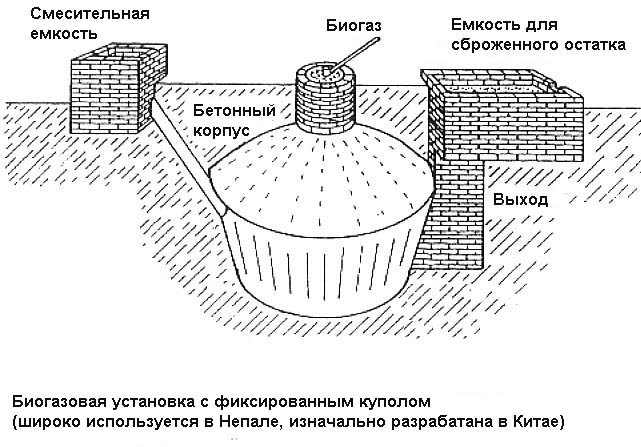
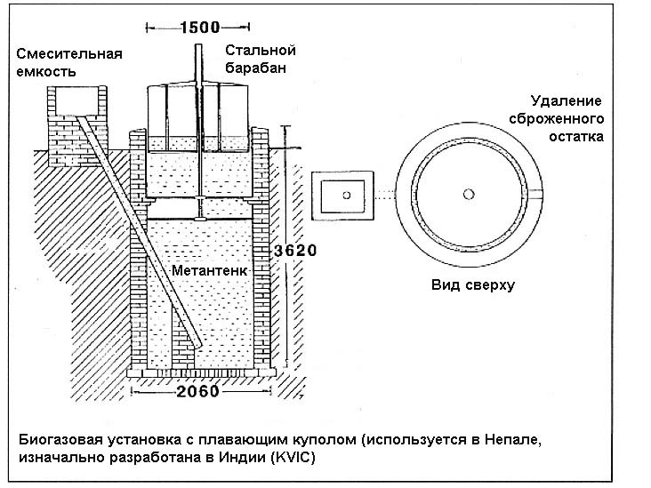
МЕТАНТЕНК
Представляет собой цилиндрическую или эллипсоидальную
конструкцию, углубленную в землю, в которой происходит процесс
сбраживания (ферментации) субстрата. Часто метантенк называют
ферментационной емкостью или камерой. В простых БУ для индивидуальных
хозяйств, работающих при температуре окружающего воздуха, метантенк
рассчитан так, чтобы среднее время пребывания в нем навоза равнялось 55,
40 или 30 дням. Это время называется гидравлическим временем удержания
(ГВУ) биогазовой установки. Продолжительность 55, 40 и 30 дней
определяется температурной зоной страны. Территория Индии разбита на три
температурные зоны. Метантенк может быть построен с помощью кирпичной
или каменной кладки, бетона или бетонных блоков, железобетонных или
стальных конструкций. Кроме того, в Индии часто используются конструкции
из бамбука, обмазанного цементным раствором. Для малых БУ с плавающим
газгольдером и объемом от 2 до 3 кубометров внутренний объем метантенка
представляет собой одну камеру. Для объема 4 кубометра и более внутри
метантенка строится стенка. Это делается для того, чтобы избежать
частичной циркуляции субстрата и повысить общую эффективность работы
установки. Стенка делит объем метантенка на две половины. Для метантенка
с фиксированным куполом разделение объема не используется. Это
объясняется тем, что диаметр метантенков с фиксированным куполом обычно
больше, чем у моделей с плавающим газгольдером. Поэтому проблема с
частичной циркуляцией субстрата не возникает.
ГАЗГОЛЬДЕР ИЛИ ЕМКОСТЬ ДЛЯ ХРАНЕНИЯ БИОГАЗА
В случае плавающего газгольдера последний представляет собой барабан, сделанный либо из стальных листов, либо железобетона, либо различных видов пластика. Он размещается в верхней части метантенка как крышка, погружаясь боковыми стенками в субстрат. При отсутствии биогаза он стоит на специальных ребрах на стенках метантенка, предусмотренных для этой цели. Газ, образуясь в субстрате и поднимаясь вверх, собирается в барабане. Для подачи газа по трубопроводу к месту использования после открытия клапана, внутри газгольдера необходимо давление 8-10 см водяного столба. Это давление может быть обеспечено весом газгольдера 80-100 кг/м2. При движении вверх и вниз газгольдер направляется центральной направляющей трубой. Газ заперт со всех сторон за исключением нижней части. Корка, образующаяся на поверхности, перемешивается с помощью вращения газгольдера, имеющего внутри соответствующее устройство для перемешивания. Объем газгольдера индивидуальной БУ с плавающим газгольдером составляет 50% суточного производства биогаза. То есть, газгольдер может быть полностью наполнен за 12 часов работы установки.
В случае конструкции с фиксированным куполом газгольдер часто называют камерой для хранения биогаза. В этом случае камера является неотъемлемой частью установки (метантенка) и сделана из тех же материалов, что и метантенк. Объем камеры соответствует 33% суточного производства биогаза. То есть, камера может быть полностью наполнена за 8 ночных часов, когда биогаз не используется.
СИСТЕМА ЗАГРУЗКИ
В БУ с плавающим газгольдером система загрузки представляет собой трубу, изготовленную из цемента. Труба опускается на дно метантенка и располагается по одну сторону от разделительной стенки (если таковая имеется). Верхняя часть трубы выходит в смесительную емкость. В некоторых случаях (конструкция с фиксированным куполом) система загрузки представляет собой емкость, выполненную из бетона или кирпича, соединенную в верхней части со смесительной емкостью, а в нижней - с впускным отверстием метантенка.
СИСТЕМА ВЫГРУЗКИ
В случае БУ с плавающим газгольдером система выгрузки
сброженного навоза обычно представляет собой бетонную трубу,
установленную под углом и погруженную в навозную массу. Иногда система
выгрузки представляет собой прямоугольный или полусферический
резервуар, соединенный в нижней части с метантенком с помощью выпускного
отверстия, через которое автоматически удаляется сброженная масса.
Верхняя часть резервуара накрыта крышкой.
СМЕСИТЕЛЬНАЯ ЕМКОСТЬ
Смесительная емкость представляет собой цилиндрический резервуар, необходимый для перемешивания навозных стоков с необходимым количеством воды для получения однородной массы с определенным содержанием сухого вещества. Интенсивное перемешивание субстрата перед загрузкой помогает увеличить эффективность сбраживания. Обычно перемешивание достигается с помощью вращающейся мешалки- пропеллера, установленной в резервуаре.
ВЫПУСКНОЙ ТРУБОПРОВОД БИОГАЗА
Выпускная биогазовая труба изготавливается из металла или пластика и устанавливается в верхней части плавающего газгольдера или купола. По этой трубе биогаз подается к месту утилизации. В трубе устанавливается запорный клапан для регулировки или прекращения подачи биогаза.
Классификация биогазовых установок
Малые биогазовые установки можно условно разделить на
следующие категории: БУ с плавающим газгольдером, БУ с твердым куполом,
БУ с отдельным газгольдером и БУ с мягким газгольдером.
БУ с плавающим газгольдером
Такая конструкция является обычной в Индии и представляет собой систему с полупостоянной загрузкой сырья. Обычно в ней используется газгольдер цилиндрической формы, плавающий в метантенке, имеющем соответствующую форму. В процессе образования биогаз накапливается в газгольдере при давлении 8-10 см водяного столба. Объем газгольдера подбирается таким образом, чтобы вмещать половину суточного количества биогаза. Если биогаз не используется регулярно, его излишки будут попадать в атмосферу, проникая в виде пузырьков газа между нижней кромкой газгольдера и стенками метантенка.
БУ с твердым куполом
БУ с твердым куполом появились в Индии в середине 70-х годов. Такая конструкция была заимствована из Китая. Китайские БУ, явившиеся прототипом, используют в качестве сырья сезонные отходы растениеводства, и по этой причине основаны на принципе полупорционной загрузки. Однако индийские БУ отличаются от китайских, поскольку в Индии основным источником сырья является навоз и, как следствие, используется полупостоянная загрузка. Давление биогаза внутри китайских установок может быть в диапазоне от нуля до 150 см водяного столба. Обычно давление контролируется с помощью простого манометра, установленного на выходной трубе недалеко от места утилизации биогаза. В индийских установках давление может изменяться в пределах от нуля до 90 см водяного столба.
БУ с отдельным газгольдером
Метантенк такой установки представляет собой герметичную емкость. Выходное отверстие для биогаза находится в верхней части метантенка и соединено с помощью трубопровода с плавающим газгольдером, расположенным на определенном расстоянии от метантенка. Таким образом, внутри метантенка нет избыточного давления, в результате чего снижена вероятность утечек субстрата в случае негерметичности основной емкости установки. Другим преимуществом такой системы является возможность подключения нескольких метантенков к одному большому газгольдеру, построенному в непосредственной близости от места использования биогаза. Недостатком является относительная дороговизна. Обычно общий газгольдер используется для подключения нескольких метантенков с полупорционной загрузкой.
БУ с мягким газгольдером
Основная часть такой установки, включая и метантенк (реактор),
сделана из резины, плотного пластика или неопрена. Входная и выходная
трубы для сырья и сброженной массы изготовлены из поливинилхлорида
(ПВХ). Подобная же труба меньшего диаметра используется для выпуска
биогаза. Такая установка легко перевозится и просто устанавливается. При
установке та часть, в которой будет сбраживаемый субстрат, должна
поддерживаться снаружи. Обычно БУ помещают в специальную емкость,
углубленную в грунт. Глубина емкости соответствует при этом глубине
реактора. Таким образом, уровень сбраживаемой массы соответствует уровню
грунта. Для того, чтобы создать избыточное давление в газгольдере, на
нем размещается специальный груз. Преимуществом такой установки является
возможность серийного производства. Недостатком является относительная
дороговизна пластика и резины хорошего качества. Более того,
продолжительность эксплуатации такой установки меньше, чем у обычных
биогазовых установок. Поэтому, несмотря на хороший потенциал, подобные
биогазовые установки пока не получили широкого распространения
ПОЛУЧЕНИЕ ЭЛЕКТРОЭНЕРГИИ ИЗ БИОМАССЫ
Исторически одной из первых альтернатив использования ископаемого топлива для производства электроэнергии явилась древесина, сжигаемая в котлах для производства пара, который в конечном итоге приводит в действие генератор электрического тока. При использовании древесины возникают проблемы, связанные со свойствами этого вида топлива. Древесина должна быть измельчена, вывезена из леса и подана в котел. В процессе эксплуатации необходим постоянный контроль, в частности, необходимо удаление золы. Возможны проблемы с накоплением твердых и жидких/полужидких несгоревших продуктов в камере сгорания. Любой оператор должен понимать, чем древесина отличается от других видов топлива.
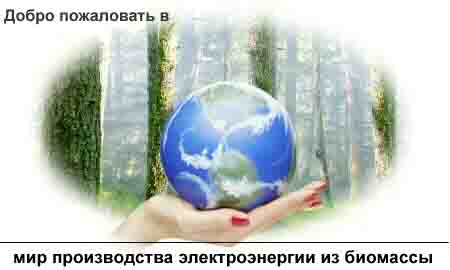
ГАЗИФИКАЦИЯ
Обычно электроэнергию из древесины получают путем использования паровых турбин конденсационного типа. При этом биомасса сжигается в котле для производства пара, который, попадая в турбину, приводит в движение генератор. Технология хорошо известна, проверена и позволяет использовать широкий диапазон топлив. Однако оборудование сравнительно дорогое, а эффективность сравнительно низкая. При этом возможности улучшения этих параметров в будущем ограничены. Существуют также проблемы, связанные с использованием пара. При атмосферном давлении пар занимает объем в 1200 раз больший, чем объем воды. Производство пара требует нагрева воды выше температуры кипения под давлением. Вода кипит при температуре 100 оC на уровне моря. Поддержание в котле высокого давления позволяет значительно поднять температуру кипения. Увеличение температуры пара необходимо для того, чтобы увеличить его полезную работу. Пар низкой температуры будет просто конденсироваться в паропроводах и цилиндрах турбины.
Новейшим способом получения электроэнергии из биомассы является газификация. В этом случае вместо простого сжигания твердого топлива часть его переводится в газообразную форму, содержащую 65-70% энергии исходного топлива. Получаемые горючие газы могут использоваться аналогично природному газу для производства электроэнергии, в качестве топлива для автомобилей, в промышленности, или для получения синтетических видов топлива. Технология находится в стадии интенсивных исследований.
Многообещающей альтернативой является термохимическая газификация биомассы в условиях ограничения количества воздуха и использование получаемых газов в газовых турбинах. Газовые турбины относительно дешевые, более эффективные и имеют хорошие перспективы улучшения обоих показателей.
Газификаторы биомассы обычно имеют четыре основные составные части:
- Система подготовки и подачи топлива.
- Реактор.
- Газоочистка, система охлаждения и перемешивания.
- Энергетическая установка, например, двигатель внутреннего сгорания (ДВС) с генератором или насосной установкой, или газовая горелка в котле или печи.
Использование газа в ДВС с последующим производством электроэнергии предъявляет жесткие требования к газификатору и качеству получаемых газов. Необходимость очистки, охлаждения и перемешивания газа делает технологию достаточно сложной. Опыт эксплуатации подобных устройств в мире показал, что они чувствительны к изменению параметров топлива, изменению нагрузки оборудования, качеству обслуживания и условиям окружающей среды.
К газификаторам, используемым только для производства тепла, не предъявляются столь жесткие требования, поэтому их легче проектировать и эксплуатировать, они дешевле и более эффективные с энергетической точки зрения.
Все типы газификаторов требуют использования топлива с низкой влажностью и малым содержанием летучих компонентов. Поэтому древесный уголь хорошего качества является лучшим видом топлива. Однако его использование требует дополнительного оборудования, что снижает общую эффективность метода.
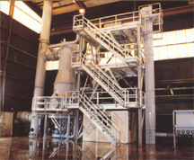
В простейшей газовой турбине с открытым циклом горячие газы выбрасываются непосредственно в атмосферу. Другой возможностью является их использование для производства пара с помощью утилизатора тепла. Пар может использоваться для обогрева в когенерационных системах, а именно для повторного впрыска в газовую турбину. Это приводит к увеличению производства энергии и повышению общей эффективности системы (цикл STIG - газовые турбины с инжекцией пара в паровых турбинах и цикл GTCC - комбинированный газопаровой цикл). Природный газ является более предпочтительным топливом, поэтому немногие поставщики будущего оборудования имеют стимулы тратить миллионы долларов на исследования и развитие термохимической газификации угля для снабжения газовых турбин. Большая часть этих работ применима к системам, объединяющим газификацию биомассы и газовые турбины (BlG/GTs). Биомассу легче газифицировать, чем уголь. К тому же, она имеет меньшее содержание серы. Использование технологий BlG/GTs для когенерации, а также для производства электроэнергии во многих случаях может оказаться дешевле, чем использование для этих целей больших централизованных угольных тепловых станций, для которых необходимо проводить сероочистку, а также атомных и гидростанций.Газификаторы, использующие древесину и древесный уголь, становятся коммерческим продуктом. В некоторых странах проводятся исследования по использованию других видов биомассы (отходов) в качестве топлива. При этом необходимо решить проблемы чувствительности газификаторов к изменению параметров топлива, некоторые технические сложности, а также соответствие экологическим требованиям. Капитальные затраты могут быть значительно уменьшены в случае использования для строительства местных материалов. Например, стоимость газификатора, построенного из железобетона в Азиатском технологическом институте (Бангкок) оказалась в десять раз меньше западных аналогов. Для развивающихся стран многообещающей перспективой является использование технологии BlG/GTs для потребностей сахарной промышленности и производства этанола.
Большое внимание газификации уделяется в Индии, потому что
здесь имеется база для широкомасштабной коммерциализации. Газификация
биомассы может удовлетворить многие потребности в энергии, особенно в
аграрном секторе. Детальный микро- и макроэкономический анализ (Jain,
1989) показал, что в Индии общий потенциал газификации биомассы мог
достичь в 2000 году от 10000 до 20000 МВт установленной мощности. Сюда
могли бы входить как малые установки для ирригации и электрификации
деревень, так и крупные промышленные энергоустановки и сетевые
электростанции, работающие на энергетических плантациях.
СОВМЕСТНОЕ СЖИГАНИЕ
Совместное сжигание, например, газифицированной биомассы и угля является хорошей возможностью уменьшения атмосферной эмиссии на угольных электростанциях. В 1999 году новая установка для совместного сжигания биомассы и угля была запущена в городе Zeltweg (Австрия). Газификатор биомассы мощностью 10 МВт был установлен на существующей угольной электростанции. Газификатор потребляет 16 м3 биомассы (щепа и кора) в час. Теплотворная способность получаемого газа находится в диапазоне 2,5 - 5 МВт/м3. Проект, получивший название "Biococomb", являлся демонстрационным проектом ЕС. Он был реализован компанией "Verbund" совместно с другими компаниями из Италии, Бельгии, Германии и Австрии и частично финансировался Европейской Комиссией.
Когенерация
Сжигание биомассы и газовые турбины
В развитых странах существует тенденция увеличения числа малых
и более гибких установок для совместного производства тепла и
электроэнергии, использующих биомассу в качестве топлива. Одним из
новейших представителей этого типа устройств является когенерационная
станция в городе Ноксвилл (Knoxville, штат Теннеси, США). Установка
сочетает топку для древесины и газовую турбину. Перед турбиной горячие
газы под давлением проходят через фильтр. Установка может работать на
свежих опилках (40% влажности). При электрической мощности 5,8 МВт
установка потребляет 10 тонн опилок в час. Тепло уносится с выхлопными
газами, имеющими температуру 370°C. Электрический КПД равен 19%, а общий
КПД - 75%. Выхлопные газы могут использоваться в паровой турбине,
увеличивая электрическую мощность до 9,6 МВт, а электрический КПД - до
30%. Установка в Ноксвилле работает с 1999 года.
Руководство для оценки потенциала, барьеров и целесообразности использования биомассы
Неиспользованный потенциал леса и древесины
Большинство промышленных лесов в Европе имеют неиспользованный потенциал древесины для энергетического применения. Помимо этого, в большинстве лесов древесина заготавливается промышленным способом. Горные и другие непромышленные леса также при определенных условиях могут поставлять энергетическую древесину, но только после аккуратной экологической оценки. Обычным видом лесных отходов являются ветки диаметром менее 7 сантиметров. Обычно листья и корни остаются в лесу. Кроме того, их сложнее использовать для производства энергии.
Сжигание большего количества древесины не является единственным решением. Необходимо увеличивать эффективность процесса. Традиционные котлы и печи во многих случаях имеют эффективность менее 30%, в то время как для современных устройств эта величина равна около 80%. Увеличение эффективности может, по крайней мере, удвоить потребление энергии без увеличения количества сжигаемого топлива. Для больших устройств дальнейшая утилизация тепла из дымовых газов может еще увеличить эффективность. В отдельных случаях древесные котлы могут быть замещены древесными газификаторами, работающими совместно с газовыми двигателями, или паровыми котлами с турбинами для когенерационного производства электричества и тепла.
Содержание энергии
Содержание энергии в абсолютно сухой древесине равно около 5,2 кВт·ч/кг. В обычной сухой древесине (20% влажности) содержание энергии около 4,2 кВт·ч/кг (нижняя теплотворная способность). Обычно статистика измеряет древесину в кубометрах (с корой или без нее). Плотность сухой древесины варьируется от 800 кг/м3 для твердых лиственных пород (например, бук) до 600 кг/м3 для хвойных пород (сосна). Отсюда содержание энергии составляет соответственно 3400 и 2500 кВт/м3 для бука и сосны (нижняя теплотворная способность, влажность 20%). В котлах с конденсаторами дымовых газов может быть использовано до 80-90% от верхней теплотворной способности, которая приблизительно на 4 и 10% выше нижней теплотворной способности для древесины, имеющей влажность 20 и 40%.
Оценка ресурсов
Доступное количество древесины может быть оценено лесной статистикой как разница между ежегодным приростом (в м3, включая кору) и ежегодным потреблением деловой и неделовой древесины, не связанным с производством энергии. Количество коры оценивается величиной в 20% от остальной древесины. Часто статистика располагает данными только о коммерческом потреблении древесины. В этом случае к ним нужно добавить и некоммерческое использование. Последнее часто включает сбор древесины местными жителями для отопления. В этом случае оно может быть учтено в энергетическом потенциале. В действительности ресурсы могут быть меньше полученной оценки из-за необходимости полного или частичного удаления веток по экологическим причинам. Эти факторы могут уменьшить потенциал на 50% даже в коммерческих лесах.
Если лесная статистика неполна или информация ненадежна, можно сделать простые оценки:
Если
имеется информация только для коммерческой древесины, то потенциал
древесных отходов можно оценить как долю от коммерческого использования.
В соответствии с Датским опытом, количество древесины для переработки в
щепу (ветви менее 7 см в диаметре) составляет 25% от производства
деловой древесины, включая кору, и 31% без коры.
Некоторые оценки можно сделать исходя из площади коммерческого леса.
Оценки, сделанные в Германии (Западной), дают ежегодный прирост 10-15
т/га с содержанием энергии 150-225 ГДж/га (42-63 МВт·ч/га). Если 3/4
этого количества используется для производства деловой древесины,то
имеющиеся отходы содержат 40-60 ГДж/га энергии (11-16 МВт·ч/га). Оценки
количества лесных отходов, сделанные на Датском острове Борнхольм
показывают, что количество отходов, пригодных для практического
использования (менее 7 см в диаметре) составляет 1,7 т/га, что
эквивалентно 18 ГДж/га (5 МВт·ч/га) при 40% влажности или 25 ГДж/га (7
МВт·ч/га) при 20% влажности. Эти оценки не учитывают такие важные
факторы, как климат или вид почвы, а значит и реальную
производительность леса.
Барьеры
В целом, барьеров в использовании древесины для отопления не существует. Однако, эффективное использование древесины требует наличия эффективных печей и базовых знаний потребителей. Использование щепы требует наличия оборудования для производства щепы, хранения, сушки и подачи в соответствующие котлы. Для успешного использования щепы в качестве источника тепла такая производственная цепочка должна быть создана на месте. Щепа более пригодна для больших котлов (около 100 кВт). Щепа часто имеет большую влажность (40-60%). В таких случаях является предпочтительным использование котлов с конденсаторами дымовых газов.
Воздействие на экономику, окружающую среду и занятость населения
Экономика
Использование дров и щепы основано на местных ресурсах, требует минимальных транспортных/импортных расходов и поэтому является дешевым по сравнению с использованием ископаемого топлива. Оценка стоимости топлива, сделанная в Дании без учета транспортных затрат и прибыли, дает для лиственных пород (760 кг/м3) 240 дат. крон на м3. Это эквивалентно 0,11 ДКр/кВт·ч (0,0203 $/кВт·ч). Около 2/3 этой цены составляет зарплата рабочих, остальное - стоимость механизмов и сырья.
Экология
Использование древесины, замещающей ископаемое топливо, уменьшает эмиссию СО2, потому что леса в течение жизни поглощают то же количество СО2, которое выделяет древесина в процессе горения. Энергия, затрачиваемая на подготовку топлива, не превышает нескольких процентов от получаемого тепла. При сжигании древесины выделяется гораздо меньше оксида серы (SO2) по сравнению со сжиганием угля. Эмиссия NOx зависит от процесса сжигания, и часто из-за относительно низких температур горения количество оксидов азота меньше, чем при сжигании угля или мазута. Эмиссия частиц и несгоревших углеводородов зависит всецело от процесса горения и может быть проблемой для малых и некачественных котлов. Зола, остающаяся после сжигания, часто может использоваться в качестве удобрения. Важно, чтобы заготовки леса проводились адекватно и сопровождались соответствующими мероприятиями по восстановлению лесных запасов.
Занятость населения
В соответствии с французским опытом, утилизация энергии лесных отходов требует 450 рабочих мест на 1 ТВт·ч полученной энергии при уровне механизации, обычном для Западной Европы.
Правило
Каждый гектар леса на хороших почвах дает 10 т/га древесины в год. Если 25% древесины является отходами и может быть использовано для производства энергии, то энергетический выход составит 11 Мвтч (при 20% влажности).
Отходы деревоперерабатывающей промышленности
В процессе переработки на деревообрабатывающих (ДОК) и бумажных комбинатах возникают отходы древесины, которые могут использоваться для энергетических целей. На ДОК это преимущественно кора и опилки. На бумажных комбинатах (производство целлюлозы и бумаги) - это различные, в том числе содержащие соли серной кислоты растворы, а также остатки древесины и коры. Кроме коры и опилок, на ДОК имеются верхушки деревьев, сучья, щепа и другие отходы. Часть этих отходов используется для изготовления древесноволокнистых плит. Анализ, проведенный в семи странах, показал, что 30-70% отходов деревоперерабатывающей промышленности используется для неэнергетических целей.
Из отходов большого размера может быть получена щепа для использования в соответствующих котлах, в то время как опилки могут сжигаться в специальных печах или использоваться для изготовления гранул или брикетов с последующим использованием в малых котлах или печах. Зачастую отходы используются для удовлетворения собственных потребностей в тепле, паре или, в некоторых случаях, в электричестве.
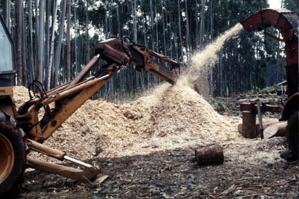
Содержание энергии
Содержание энергии в древесных отходах равно около 4,2
кВт·ч/кг (нижняя теплотворная способность, 20% влажности), что
соответствует 3400 и 2500 кВт·ч/м3 для бука и сосны (смотрите предыдущую главу).
Оценка ресурсов
Оценка потенциала древесных отходов может быть основана на
статистических данных о продаже неэнергетической древесины и общего
количества древесины, вывезенной из леса. Разница между этими величинами
может быть использована в энергетических целях и, до некоторой степени,
в деревоперерабатывающей промышленности. Для упрощенных оценок можно
считать, что отходы составляют 25-35% от общего количества вывезенной из
леса древесины: например, в Польше - 29%, Канаде - 29%, Финляндии -
33%, Швеции - 36%, США - 37% (по данным Biofuels). Если большая часть
древесины экспортируется без предварительной обработки, эта доля может
быть ниже.
Барьеры
С этим видом ресурсов связано наименьшее количество барьеров по сравнению со всеми другими видами возобновляемых источников энергии. Однако, для их использования необходимы инвестиции в новые котлы или, по крайней мере, в предтопки для существующих лучших образцов котлов.
Влияние на экономику, окружающую среду и занятость населения
Экономические параметры энергетического использования промышленных древесных отходов практически всегда более привлекательны, чем при использовании лесных отходов.
Экологический эффект от сжигания такой же, как от лесной древесины при условии, что химически пропитанная и покрашенная древесина не используется. С последней необходимо обращаться как с бытовыми или химическими отходами в зависимости от вида обработки.
Прямое увеличение рабочих мест из-за использования древесных отходов невелико, потому что отходы должны перерабатываться в любом случае. Косвенным образом оно создает большую занятость населения, поскольку происходит превращение бросового материала в ценный продукт (энергию).
Сжигаемые отходы сельского хозяйства
Солома, ветви фруктовых деревьев, отходы производства вина и растительного масла представляют собой отходы, которые могут использоваться для получения энергии. Урожай соломы в большой степени зависит от погодных условий и может значительно меняться из года в год. Если на неэнергетические нужды используется большая часть соломы, то в периоды малой урожайности необходимо учитывать необходимость использования альтернативного топлива. Таким топливом может быть щепа из древесных остатков, которое пригодно для использования во многих котлах. Лесные отходы могут находиться в лесу несколько лет перед использованием. Излишки соломы могут запахиваться в почву для улучшения слоя гумуса на полях.
Содержание энергии
Верхняя теплотворная способность соломы (сухое вещество) составляет 4,9 кВт·ч/кг. Для типичной влажности 15% нижняя теплотворная способность составляет 4,1 кВт·ч/кг
Количество энергии, содержащейся в 1 м3 уплотненной тюкованной соломы, составляет 500 кВт·ч (плотность 120 кг/м3). Средний тепловой КПД для 22 соломосжигающих станций в Дании равен 80-85% без учета конденсации дымовых газов.
Оценка ресурсов
Оценка общего количества соломы может быть получена с помощью сельскохозяйственной статистики. Для определения энергетического потенциала соломы полученное значение должно быть уменьшено на величину, используемую для корма скота и подстилки. Такое потребление соломы в значительной мере зависит от условий содержания скота. В Дании средний избыток соломы оценивается в 59%, из которых 1/5 часть уже используется (в основном для производства тепла). В Восточной Богемии избыток соломы оценивается в 35%. По общим консервативным оценкам, в Европе для производства энергии может использоваться 25% соломы. Производство соломы может изменяться в пределах 30% от средней величины.
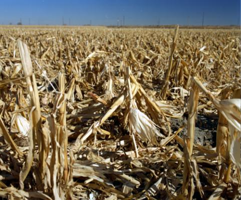
пшеница - 1,3 тонны соломы/тонну зерна;
ячмень - 0,8 тонны соломы/тонну зерна;
рожь - 1,4 тонны соломы/тонну зерна;
овес - 1,1 тонны соломы/тонну зерна.
Грубые оценки также можно сделать на основании площади земель и
производительности соломы от 4 до 7 тонн/га в зависимости от типа почвы,
погодных условий и типа зерновой культуры.
Барьеры
Ограниченность опыта и финансовых ресурсов для необходимых
инвестиций зачастую является наибольшим барьером для энергетического
использования соломы. Другими барьерами могут быть:
необходимость развития рынка соломы с привлекательными ценами как для потребителей, так и для поставщиков;
в
некоторых случаях наличие пестицидов может привести к повышенному
содержанию хлора в соломе. Это сводится к минимуму, если солома
выдерживается на полях в течение определенного периода (увядание);
использование соломы в непригодных котлах, загрязняющих окружающую среду, может создать соломе "плохую репутацию".
Экономика
В Дании цена на солому варьируется между 0,085 ДКр/кВт·ч (1,2 евроцента) до 0,12 ДКр/кВт·ч (1,7 евроцента) для тюков, доставленных на соломосжигающую станцию. В Чешской республике цена соломы на фермах равна 0,15 евроцент/кВт·ч для несобранной соломы и 0,19 евроцент/кВт·ч для соломы в тюках.
Удельные затраты на 1 кВт·ч произведенного тепла, усредненные для 16 установок в Дании, приведены в таблице
| Топливо | ||
| Электричество* | ||
| ТО&Э, администрирование | ||
| Капитальные затраты | ||
| Всего |
Экологическое воздействие использования сельскохозяйственных отходов анологично использованию древесины - уменьшение эмиссии СО2 и соединений серы по сравнению со сжиганием угля или нефти. Эмиссия пыли, NOx и летучих органических веществ зависит от конструкции топки и очистки дымовых газов. Как уже упоминалось выше, содержание хлора приводит к эмиссии HCl. Усредненные величины эмиссии для 13 датских соломосжигающих станций приведены в таблице (все станции имеют пылеуловители).
|
|
г/кВт·ч |
г/кВт·ч |
** данные основаны на результатах двух измерений
Занятость населения
Непосредственная занятость населения для сбора соломы в условиях механизированного сельского хозяйства Дании оценивается в 350 рабочих мест на 1 ТВт·ч произведенного тепла. Оценка сделана для больших тюков весом 500 кг. Для тюков меньшего размера (10-20 кг) количество необходимых трудовых ресурсов выше.
Энергетические растительные культуры
По существующим оценкам, 20-40 миллионов гектаров земли в Западной Европе избыточны с точки зрения традиционного сельскохозяйственного производства. Аналогичная ситуация (перепроизводство и избыток земель) ожидается в Центральной Европе. Избыточные земли могут быть использованы для разнообразных целей, одной из которых является выращивание энергетических культур.
Многообещающими для энергетических целей культурами в Европе являются быстрорастущие деревья (плантации различных видов ивы и тополя), мискантус (Miscanthus) и сорго (Sweet Sorghum). Выращенные растения могут использоваться для сжигания и производства тепла и электроэнергии. Другой многообещающей возможностью является производство жидких топлив, например, из рапса.
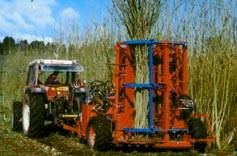 |
 |
| Плантации ивы |
Содержание энергии и выход
Следующая таблица дает представление об энергетической эффективности трех видов растительных культур, используемых для производства твердого топлива.
| Вид |
т/га/год |
ГДж/сухой тонны |
ГДж/га/год |
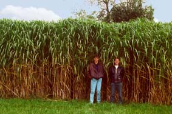 |
Мискантус |
Другой интересной культурой является конопля, урожайность которой
составляет 24 т/га при выращивании в течение 4 месяцев. Однако плантации
конопли запрещены во многих странах, несмотря на то, что некоторые ее
виды непригодны для производства наркотических веществ.
Оценка ресурсов
Энергетический потенциал может быть оценен по количеству земли в стране/регионе, которую можно использовать для энергетических плантаций и урожайности растительных культур в условиях местного климата и качества почвы. Во многих странах имеется информация об урожайности разных растений. Использование излишков фермерских земель и непригодных деградирующих земель является приоритетным.
Важной характеристикой при оценке потенциала является отношение вход/выход (I/O). Например, если жом (багасса) сорго (2/3 энергии) и сахар (1/3 энергии) используются для получения энергии, отношение (I/O) составляет 1:5. Это означает, что может быть получено в 5 раз больше энергии при использовании растения в качестве топлива, чем затрачено на посевные работы, удобрения и пестициды, сбор урожая, транспортировку и подготовку топлива. Обычно это отношение больше, чем 1:5 для деревьев и меньше для растений, используемых для получения жидких видов топлива.
Барьеры
Быстрорастущие растения требуют большего количества удобрений по сравнению с традиционными растительными культурами. Использование деградированных земель также предполагает предварительную регенерацию с помощью удобрений. Для древесных видов это условие не является жестким, поскольку деревья обладают корневой системой, сохраняющей активность в течение года. Кроме того, древесная зола может использоваться в качестве эффективного удобрения на энергетических плантациях, уменьшая проблему попадания удобрений в грунтовые воды.
Воздействие на экономику, окружающую среду и занятость населения
Затраты на производство одной (сухой) тонны сорго составляют 50 Евро, а на производство одной (сухой) тонны ивы Salix составляют 70 Евро (Дания, Hvidsed).
Затраты на производство электроэнергии из биомассы (сорго)
Тип установки
Малые, 1992 год : 0,16 Евро/кВт·ч
Большие, 2000 год : 0,08 Евро/кВт·ч
Малые улучшенные, 2000 год : 0,07 Евро/кВт·ч
Большие улучшенные, 2000 год : 0,05 Евро/кВт·ч
Экология
Важной особенностью ивы является то, что она может быть использована для очистки воды. Возможно комплексное использование энергетической ивы в системах очистки воды. Другими преимуществами энергетических плантаций являются: контроль лесных пожаров, уменьшение эрозии почвы, поглощение пыли, а также замещение использования ископаемого топлива, приводящее к уменьшению эмиссии серы и оксидов азота.
Занятость населения
Половину затрат на выращивание сорго составляет оплата трудовых ресурсов. Дополнительное производство 500 тонн сухой биомассы в год создает одно рабочее место. Другие дополнительные рабочие места могут быть созданы в смежных областях - компостирование, производство бумаги, сервисные организации.
Некоторые правила:
|
|
Биогаз
Самый большой потенциал биогаза в Европе представляют навозные стоки в сельском хозяйстве. Другими источниками сырья являются:
Осадки
после механической или биологической очистки сточных вод (осадок после
химической очистки часто образует лишь малое количество биогаза).
Бытовые отходы органического происхождения.
Органические отходы промышленности, например, мясоперерабатывающей или пищевой.
Необходимы предосторожности для того, чтобы при переработке не использовались отходы, содержащие тяжелые металлы или вредные химические вещества, если твердый остаток предполагается использовать в качестве удобрений. Однако такие отходы могут перерабатываться в биогазовых установках, если в дальнейшем сухой остаток считается видом отходов и сжигается.
Другим источником биогаза могут быть полигоны ТБО, содержащие большое количество органической материи. Биогаз может быть собран при помощи бурения скважин. Такое бурение в любом случае уменьшает неконтролируемую эмиссию метана из тела полигона.
Содержание энергии
В случае хорошей организации процесса из одного килограмма твердого сухого вещества (TВ) обычно получается около 0,3-0,45 м3 биогаза (60% метана). Типичное время сбраживания составляет 20-30 дней при температуре 32°C. Нижняя теплотворная способность газа составляет 6,6 кВт·ч/м3. Количество получаемого биогаза часто приводится на килограмм летучего твердого вещества (ЛТВ). Содержание ЛТВ в навозе, не содержащем солому, песок и другие подобные примеси, обычно составляет 80% от твердого вещества (TВ).
Биогазовые установки обладают собственным потреблением
энергии для поддержания повышенной температуры в метантенке. Для БУ с
удачной конструкцией собственное потребление энергии составляет 20% от
получаемой энергии. В случае использования биогаза для одновременного
производства электрической и тепловой энергии (когенерация), 30-40%
энергии преобразуется в электрическую энергию, 40-50% - в тепловую, а
оставшаяся часть потребляется на собственные нужды.
Оценка ресурсов
Оценку количества навоза можно осуществить, используя данные о поголовье скота. Поскольку количество навоза зависит от количества и типа получаемых кормов, необходимо использовать средние данные для каждой из стран.
В таблице приведены данные для Дании:
Для оценки годовой производительности необходимо оценить продолжительность содержания животных в помещении. Для больших птицеферм и свиноферм она зачастую равна целому году, в то время как коровы могут содержаться на привязи от нескольких месяцев в году до целого года.
Для ориентировочной оценки количества навоза телят, свиней и птицы могут быть сделаны следующие предположения:
Телята 1-6 месяцев: 25% от количества навоза молочных коров.
Другие виды телят (телята > 6 месяцев, мясной скот, матки): 60% от количества навоза молочных коров.
Поросята 5-15 кг: 28% от количества навоза свиноматки.
свиньи на выращивании > 15 кг: 52%.
птица на выращивании: 75% от взрослой птицы.
Барьеры
Наличие барьеров сдерживает крупномасштабное развитие биогазовых установок в странах CEEC:
Сложно
сделать биогазовые установки окупаемыми, если единственным источником
прибыли является продажа энергии. Применение БУ становится
привлекательным после учета эффектов обработки навоза. Это могут быть
улучшение условий гигиены, простота обращения, уменьшение запаха и
переработка промышленных отходов.
недостаток знаний о БУ в среде руководителей и организаторов.
Воздействие на экономику, окружающую среду и занятость населения
Экономика
Экономические параметры БУ определяются высокими инвестиционными затратами, умеренными затратами на эксплуатацию и техническое обслуживание, практически бесплатным сырьем и доходом, получаемым от продажи биогаза или электроэнергии и тепла. Иногда к этому можно добавить другие параметры, например, превращение отходов в полезное удобрение.
Например, в Чешской Республике стоимость биогазовой установки, способной перерабатывать навоз от 100 коров, оценивается в 70000 долларов. Эта установка будет производить 220 МВт·ч в год и энергию для собственного нагрева. В результате, необходимые инвестиции равны 0,32 долларов на кВт·ч/год. Новые датские биогазовые установки имеют сходные экономические параметры. По существующим оценкам, совместное чешско-датское предприятие могло бы уменьшить цену на 40% (до 0,2 долларов на кВт·ч/год), однако эти оценки не были подтверждены на практике.
Годовые затраты на эксплуатацию и техническое обслуживание обычно равны 10-20% от общей стоимости. Они зависят от организации, уровня зарплаты, типа установки и транспортных расходов. Если расходы на эксплуатацию и техническое обслуживание равны 10% от стоимости в год и требуется, чтобы срок окупаемости установки не превышал 10 лет, цена на электроэнергию должна быть на уровне 0,04-0,06 $/кВт·ч (в соответствии с приведенным примером из Чехии при условии, что сброженный остаток не продается в качестве удобрения).
К экологическим воздействиям БУ на окружающую среду относятся:
Производство энергии, замещающей ископаемое топливо, уменьшение эмиссии СО2.
Уменьшение запаха и улучшение гигиенических условий.
Переработка определенного вида органических отходов, который в противном случае может вызвать экологическую проблему.
Уменьшение эмиссии метана из-за неконтролируемого анаэробного разложения навоза.
Упрощение обращения с навозом, превращение части навоза в удобрение и уменьшение использования искусственных удобрений.
Занятость населения
Прямая занятость населения в Дании на биогазовых установках оценивается величиной в 560 рабочих мест на 1 ТВт·ч произведенной энергии, из которых 420 заняты эксплуатацией и обслуживанием, а 140 - на строительстве (2000 человеко-лет для создания установок, производящих 1 ГВт·ч и имеющих период эксплуатации 14 лет). Эта оценка верна для механизированных систем с признаками централизации, то есть часть навоза транспортируется к установке от соседних ферм.
Концепция развития биоэнергетики в Украине
Производство энергии из возобновляемых источников динамично развивается в большинстве Европейских стран. В 1995 г. в странах ЕС на долю возобновляемых источников энергии (ВИЭ) приходилось 74.3 млн т нефтяного эквивалента (т н. э.), что составляло около 6% общего потребления первичных энергоносителей (ОППЭ) (Таблица 1). Из них на долю биомассы приходилось более 60%, что эквивалентно около 3% ОППЭ. В отдельных странах вклад биомассы в ОППЭ значительно превышает среднеевропейский: в США ее доля составляет 3.2%, в Дании - 8%, в Австрии - 11%, в Швеции - 19%, в Финляндии - 21%. В соответствии с программой развития ВИЭ (White Paper), в странах ЕС биомасса будет покрывать около 74% общего вклада ВИЭ в 2010 г, что будет эквивалентно около 9% ОППЭ. Очевидно, что биомасса составляет наиболее развитый и поступательно возрастающий сектор ВИЭ в ЕС.
Таблица 1. Выработка тепловой и электрической энергии из возобновляемых источников энергии в странах ЕС
| Тип возобновляемых источников энергии | Производство энергии | Общие капитальные затраты в 1997-2010 гг., млрд $ | Снижение выбросов СО2 до 2010 г., млн т/год | |||
| 1995 г. | 2010 г. | |||||
| млн т н. э. |
% | млн т н. э. |
% | |||
| Ветроэнергетика | 0.35 | 0.5 | 6.9 | 3.8 | 34.56 | 72 |
| Гидроэнергетика | 26.4 | 35.5 | 30.55 | 16.8 | 17.16 | 48 |
| Фотоэлектрическая энергетика | 0.002 | 0.003 | 0.26 | 0.1 | 10.8 | 3 |
| Биомасса | 44.8 | 60.2 | 135 | 74.2 | 100.8 | 255 |
| Геотермальная энергетика | 2.5 | 3.4 | 5.2 | 2.9 | 6 | 5 |
| Солнечные тепловые коллекторы | 0.26 | 0.4 | 4 | 2.2 | 28.8 | 19 |
| ВСЕГО | 74.3 | 100 | 182 | 100 | 198.12 | 402 |
Биомасса сегодня является четвертым по значению топливом в мире, давая ежегодно 1250 млн т у.т. энергии и составляя около 15% всех первичных энергоносителей (в развивающихся странах - до 38%).
Использование ВИЭ в Украине составляет на сегодняшний день 5.6 млн т у.т., что эквивалентно 2.8% ОППЭ. Из всех ВИЭ доля биомассы является наибольшей после большой гидроэнергетики - около 18% (Таблица 2). В 2001 г. из биомассы, в основном древесных отходов, было произведено 29 ПДж тепловой энергии, что составляло 0.5% ОППЭ.
Таблица 2. Вклад различных ВИЭ в производство энергии в Украине (2001 г.)
| Большая гидроэнергетика | 78.8% | Ветроэнергетика | 0.2% |
| Биоэнергетика | 17.79% | Геотермальная энергетика | 0.07% |
| Малая гидроэнергетика | 3.1% | Солнечные тепловые коллекторы | 0.04% |
| Всего 100% | |||
Украина имеет достаточно большой потенциал ВИЭ в целом и биомассы в частности. В Таблице 3 представлена структура энергетического потенциала биомассы, основанная на вероятной и оптимистической оценке. Обе оценки были выполнены сотрудниками Института технической теплофизики НАН Украины. Согласно оптимистическому прогнозу, общий потенциал биомассы, доступный для энергетического использования в Украине, составляет 17.6 млн т у.т., вероятный прогноз дает 10.6 млн т у.т. В обоих случаях основную часть потенциала составляют отходы сельского хозяйства (солома, стебли, лузга и т.п.). Одно из основных различий между прогнозами заключается в оценке потенциала соломы. В вероятном подходе считается, что только 20% всего количества соломы может использоваться для энергетических целей. Кроме того, здесь не учитывался потенциал топлива из твердых бытовых отходов (ТБО) и биогаз, полученный из сточных вод.
Таблица 3. Энергетический потенциал биомассы в Украине (данные 2001 г.)
| Вид биомассы | Энерг. потенциал, млн т у.т./год (вероятная оценка) | Энерг. потенциал, млн т у.т./год (оптимистическая оценка) |
| Зерновые культуры/ солома (без кукурузы): - пшеница - ячмень - овес - рожь - другие Всего по зерновым культурам |
0.97 0.79 0.10 0.15 0.77 3.63 |
5.6 |
| Кукуруза на зерно/ стебель, початки | 1.19 | 2.4 |
| Подсолнух/ стебель, лузга | 2.31 | 2.3 |
| Навоз/ биогаз | 1.59 | 1.6 |
| Сточные воды/ биогаз | - | 0.2 |
| Биогаз с полигонов ТБО | 0.3 | 1.6 |
| Отходы древесины - Невывезенная древесина на лесосеках (порубочные остатки), W 50-60%*) - Отходы в леспромхозах при распиловке кругляка, W 40-45% - Отходы на ДОКах при изготовлении готовой продукции, W 25-30% - Дрова, вывозимые с лесосеки, W 40-45% Всего по отходам древесины |
0.32 0.11 0.18 0.97 1.58 |
2.0 |
| Топливо из ТБО | - | 1.9 |
| ВСЕГО | 10.6 | 17.6 |
*) W - массовая влажность
Биомасса (без доли, используемой другими секторами экономики) может обеспечить 5.3-8.8% общей потребности Украины в первичной энергии (с учетом различных оценок энергетического потенциала биомассы). Технологии утилизации биомассы находятся в начале своего развития в Украине и имеют хорошие перспективы коммерциализации в ближайшем будущем.
В настоящее время в стадии рассмотрения находится "Энергетическая стратегия Украины на период до 2030 г. и дальнейшую перспективу", разработанная группой украинских ученых по Указу Президента Украины. Согласно рабочему варианту Стратегии, доля биомассы в ОППЭ составит 3.4% (2.7 млн т у.т.) в 2010 г., 7.8% (6.3 млн т у.т.) в 2020 г. и 12.6% (9.2 млн т у.т.) в 2030 г. (Таблица 4).
При разработке концепции развития биоэнергетики в Украине за основу была принята концепция Дании и вероятная оценка энергетического потенциала биомассы в Украине. Обе страны имеют относительно малую территорию, покрытую лесом (около 14%) и высокоразвитый сельскохозяйственный сектор, что приводит к подобной структуре потенциала биомассы в них.
Таблица 4. Использование ВИЭ в Украине согласно "Энергетической стратегии Украины на период до 2030 г. и дальнейшую перспективу"
| Показатели | Технический потенциал ВИЭ | Выработка тепловой и электрической энергии из ВИЭ в 2001-2030 гг. | ||||||||
| 2001 | 2010 | 2020 | 2030 | |||||||
| млн т у.т. | % | млн т у.т. | % | млн т у.т. | % | млн т у.т. | % | млн т у.т. | % | |
| Ветроэнергетика | 15.0 | 23.8 | 0.012 | 0.2 | 0.59 | 0.3 | 4.29 | 18.9 | 8.9 | 25.4 |
| Фотоэлектрическая энергетика | 2.0 | 3.2 | - | - | 0.009 | 0.09 | 0.23 | 1.0 | 0.72 | 2.1 |
| Малая гидроэнергетика | 3.0 | 4.8 | 0.17 | 3.1 | 0.15 | 1.6 | 0.48 | 2.1 | 0.65 | 1.9 |
| Большая гидроэнергетика | 7.0 | 11.1 | 4.36 | 78.69 | 4.8 | 51.2 | 5.6 | 24.6 | 6.53 | 18.7 |
| Солнечные тепловые коллекторы | 4.0 | 6.4 | 0.002 | 0.04 | 0.12 | 1.2 | 0.7 | 3.1 | 1.96 | 5.6 |
| Биоэнергетика | 20.0 | 31.7 | 0.99 | 17.8 | 2.7 | 28.5 | 6.3 | 27.9 | 9.2 | 26.3 |
| Геотермальная энергетика | 12.0 | 19.0 | 0.004 | 0.07 | 0.99 | 11.1 | 5.07 | 22.4 | 7.00 | 20.0 |
| Всего | 63.0 | 100 | 5.54 | 100 | 9.34 | 100 | 22.66 | 100 | 34.98 | 100 |
| Доля от собственных традиционных энергоресурсов | 78 | 7 | 12 | 28 | 48 | |||||
| Доля от ОППЭ | 32 | 2.8 | 4.7 | 11.3 | 17.5 | |||||
Привлечение потенциала биомассы, неиспользуемой другими секторами экономики, к энергетическому балансу Украины есть первоочередной задачей, выполнение которой реально на протяжении ближайших 5-10 лет. Среди факторов, которые могут увеличить количество биомассы, доступной для энергетического использования в ближайшем будущем, следует отметить повышение урожайности зерновых культур (и, соответственно, общего сбора соломы) и уменьшение доли соломы, используемой как грубый корм и подстилка для скота. По предварительным оценкам, эти факторы приведут к двукратному увеличению количества биомассы, доступной для энергетического использования. Кроме того, для Украины с ее большим потенциалом сельскохозяйственных земель очень перспективным является организация специальных энергетических плантаций быстрого оборота (ива, тополь, мискантус и др.). Привлечение биомассы, специально выращенной на землях, которые сейчас не используются или используются неэффективно в Украине, приведет к повышению доли биомассы в энергетическом балансе страны до 20-25%.
В Украине наиболее перспективными для коммерческого использования в ближайшие годы можно считать следующие технологии:
- промышленные древесносжигающие котлы мощностью 0,1-5 МВт для установки в гослесхозах и на деревообрабатывающих комбинатах;
- древесносжигающие станции централизованного теплоснабжения (ЦТ) мощностью 1-10 МВт;
- соломосжигающие фермерские котлы и котлы для малых теплосетей мощностью 0,1-1 МВт;
- соломосжигающие станции ЦТ мощностью 1-10 МВт;
- биогазовые установки для крупных ферм КРС, свиноферм, птицефабрик и предприятий пищевой промышленности;
- установки добычи и использования биогаза с полигонов ТБО в мини-электростанциях мощностью 0,5-5 МВт.
Приоритетного развития в Украине требуют технологии прямого сжигания древесины, в первую очередь для производства теплоты и технологического пара. Это связанно с достаточно низкой ценой на электроэнергию, которая существует в Украине (0.021 $/кВт·ч) и в то же время - достаточно высокой ценой на топливо и тепловую энергию. Внедрение мини-электростанций и мини-ТЭЦ, сжигающих твердую биомассу (древесину, солому, лузгу), будет рентабельным в случае значительного роста цен на электроэнергию или в случае субсидирования. Получение теплоты из биомассы является экономически рентабельным уже сейчас, даже в случае использования импортного оборудования. Украина также обладает достаточным техническим потенциалом, чтобы начать собственное производство древесно- и соломосжигающих котлов.
Технологии сжигания соломы также являются очень перспективными для Украины. Но широкое распространение этих технологий требует решения ряда вопросов организации сбора, прессования тюков, транспортировки и хранения соломы. Прежде всего, наилучшие перспективы для внедрения на сельскохозяйственных предприятиях имеют фермерские котлы и котлы для малых теплосетей мощностью 0,1-1 МВт. После демонстрации преимуществ этих котлов, крупные станции ЦТ также имеют хорошие возможности для коммерциализации. Что касается мини-ТЭЦ на биомассе мощностью 1-10 МВтэ, мы ограничиваем их место в концепции развития биоэнергетики в Украине двумя демонстрационными станциями (одна на древесине и одна на соломе) до существенного повышения тарифов на электроэнергию.
Крупные биогазовые установки также играют важную роль в концепции. Их широкое внедрение возможно на свинофермах с поголовьем более 5 тыс., фермах крупного рогатого скота (КРС) с поголовьем более 600 голов, птицефабриках и предприятиях пищевой промышленности. По нашим оценкам, в Украине может быть сооружено 2903 биогазовых установки со средним объемом метантенка 1000 м3, включая 295 установок на свинофермах, 130 - на птицефабриках и 2478 - на фермах КРС и предприятиях пищевой промышленности.
Использование биогаза с полигонов ТБО является наиболее прибыльным на промышленных предприятиях, расположенных неподалеку от самих полигонов. Если невозможно утилизировать биогаз в котлах близлежащей промышленности, наиболее рентабельным его использованием является производство электроэнергии мини-электростанциями или мини-ТЭЦ на базе газовых двигателей внутреннего сгорания.
Производство жидких топлив из биомассы маловероятно в Украине в ближайшее время, так как их себестоимость получается значительно выше стоимости традиционных жидких топлив. Основные усилия в этой области необходимо сконцентрировать на исследовательских и демонстрационных проектах. То же самое можно сказать о технологиях быстрого пиролиза и газификации биомассы.
В Таблице 5 представлены данные по оборудованию, которое может быть установлено в Украине в рамках реализации разработанной концепции. Снижение выбросов СО2 рассчитано для случая замещения природного газа. При расчетах приняты следующие показатели удельных капитальных затрат, исходя из стоимости оборудования украинского производителя (в скобках также указаны используемые в расчетах средние мощности оборудования):
- древесносжигающие котлы централизованного теплоснабжения - 75 $/кВтт (2 МВт);
- промышленные древесносжигающие котлы - 100 $/кВтт (1 МВт);
- древесносжигающие мини-ТЭЦ - 1000 $/кВтэ (5 МВтэ+10 МВтт);
- малые бытовые древесносжигающие котлы - 50 $/кВтт (30 кВт);
- соломосжигающие фермерские котлы и котлы для малых теплосетей - 80 $/кВтт (0.2 МВт);
- соломосжигающие станции централизованного теплоснабжения - 100 $/кВтт (2 МВт);
- соломосжигающие мини-ТЭЦ - 1500 $/кВтэ (5 МВтэ+10 МВтт);
- биогазовые установки - 100 $/м3 объема метантанка (объем метантенка 1000 м3, 75 кВтэ+150 кВтт);
- мини-электростанции на биогазе с полигонов ТБО - 600 $/кВтэ (1 МВтэ).
Таблица 5. Биоэнергетическое оборудование, которое может быть установлено в Украине в рамках реализации предложенной концепции
| Тип оборудования | Приблизи- тельная емкость рынка Украины, шт |
Установленная мощность | Период эксплуата ции, |
Замещение ископаемого топлива, | Снижение выбросов СО2, | Общие капитальные вложения | |
| МВтт | МВтэ | ч/год | млн т у.п./год | млн т/год | млн $ USA | ||
| Древесносжигающие станции централизованного теплоснабжения, 1-10 МВтт | 250 | 500 | --- | 4400 | 0.30 | 0.49 | 38 |
| Промышленные древесносжигающие котлы, 0.1-5 МВтт | 250 | 250 | --- | 8000 | 0.27 | 0.45 | 25 |
| Древесносжигающие мини ТЭЦ, 1-10 МВтэ | 1 | 10 | 5 | 8000 | 0.02 | 0.05 | 5 |
| Бытовые древесносжигающие котлы, 10-50 кВтт | 53000 | 1590 | --- | 4400 | 0.96 | 1.57 | 80 |
| Фермерские соломосжигающие котлы, 0.1-1 МВтт | 15900 | 3180 | --- | 4400 | 1.91 | 3.14 | 254 |
| Соломосжигающие станции централизованного теплоснабжения, 1-10 МВтт | 1400 | 2800 | --- | 4400 | 1.68 | 2.76 | 280 |
| Соломосжигающие мини ТЭЦ, 1-10 МВтэ | 1 | 10 | 5 | 8000 | 0.02 | 0.05 | 8 |
| Крупные биогазовые установки | 2903*) | 711 | 325 | 8000 | 1.33 | 22.36 | 290 |
| Миниэлектростанции на свалочном газе | 90 | 20 | 80 | 8000 | 0.24 | 3.26 | 48 |
| ВСЕГО | 73795 | 9071 | 415 | 6.73 | 34.13 | 1027*) | |
*) включая 2478 установок на фермах КРС, 295 - на свинофермах, 130 -на птицефабриках.
В случае реализации предложенной концепции общая установленная мощность будет составлять 9071 МВтт и 415 МВтэ. Это приведет к замещению 6.7 млн т у.т./год и снижению выбросов парниковых газов на 34 млн т/год СО2-эквивалента. Развитие биоэнергетических технологий уменьшит зависимость Украины от импортированных энергоносителей, повысит ее энергетическую безопасность за счет организации энергоснабжения на базе местных возобновляемых ресурсов, создаст значительное количество новых рабочих мест (преимущественно в сельских районах), внесет большой вклад в улучшение экологической ситуации.
В утвержденной Верховной Радой Украины в 1996 г. Национальной энергетической программе Украины на период до 2010 г. предусмотрено покрытие 10% потребностей народного хозяйства в энергии за счет нетрадиционных возобновляемых и других источников энергии. В 2000 г. актуальность этого пункта Программы была подтверждена в Рекомендациях парламентских слушаний относительно "Энергетической политики Украины". Если ориентироваться на опыт стран ЕС (где доля биомассы составляет 60% всех ВИЭ), биомасса может покрывать около 6% потребностей народного хозяйства Украины в энергии. Этот показатель хорошо стыкуется с данными представленной концепции развития биоэнергетики в Украине. Для решения целого комплекса вопросов, связанных с развитием биоэнергетики в Украине, считаем необходимым создание в ближайшее время Государственной научно-технической программы развития биоэнергетики Украины.